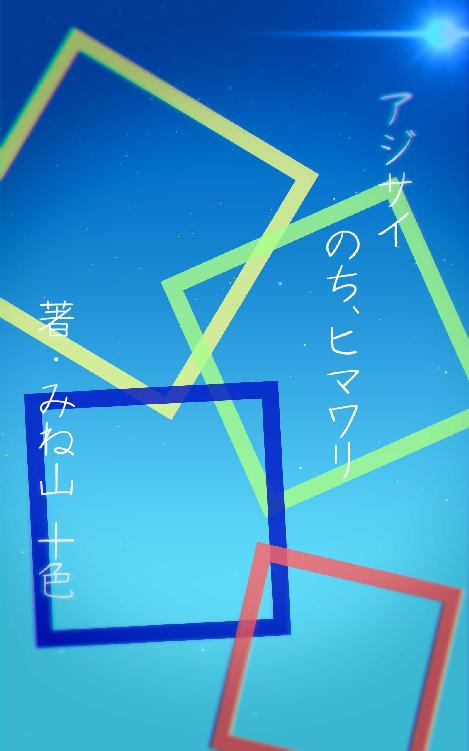

| アジサイのち、ヒマワリ | |
| 峰山 十色（ぷらぱ） & 峰山 十色 | |
| ミネヤマ・ぷらぱ (2018) | |

私は私。わたしは、わたし。
単純に、だべるだけ。
私（こいつ）・・・登場人物その１。
明るく、何でもしゃべる。運動は得意だが、勉強は苦手。
周囲に元気でアクティブな印象を与える。
アウトドア派。
夏と言えば、花火大会や夏祭りなど、イベントが好き。
ポニーテールに半そで＋ロングスカート。
わたし（あの子）・・・登場人物その２。
明るくはない。言いたいことは毒であろうとぶちこむ。
周囲にボーイッシュでクールな印象を与える。
運動は苦手だが、勉強は得意。
インドア派。
夏と言えば、風景や音楽など、色彩や空気感を重視する。
ボブカットに半そでパーカー＋半ズボン。
１・梅雨、雨中で話そう
初めまして
「初めましてって挨拶あるじゃん？」
「そうだね」
「そんなこと報告する前に名乗れよって思わん？」
「I think so too」
「読みづらいからやめなさい」
願望
「生まれ変わったら何になりたい？」
「猫かミノムシ。もしくはモグラ」
「ごめん何が望みなの？」
イラッ
「今日一番イラっとした出来事は？」
「唐突にこれを聴かれたことかな」
傘
「かさ？それともかさ？」
「悪いけど、ニュアンスは字単体だと伝わってこない」
「なんて唐突なメタ要素」
カッパ
「カッパ着れば雨でもハンズフリーだね」
「外に出なきゃオールフリーだがな」
「激しく同意」
みずたまり
「よけるのに一苦労だね」
「よけなきゃいいじゃん」
「天才かよ」
みずたまり２
「水たまりにたまに１００円玉落としたら泥がついちゃってそのまま水たまりの中の
水で泥を落としたんだ、そしたら飴玉も水たまりに落ちちゃって...」
「【たまり】とか【たま】って言いたいだけ？」
みずたまり３
「水たまりに気を取られると頭上の葉っぱに思わぬ伏兵が」
「下見なきゃいいじゃん」
「天才かよ」
静けさ
「雨が降ると声通りづらいね」
「そうだね」
「他人に言えない話とかないの？」
「あんたと友達でいることかな」
「流れるような酷評！」
排水溝
「うわぁ......水があふれてて通れない」
「そうだね」
「私をおぶってくれないかい？」
「バックドロップあり？」
「限りなくアウトに近いアウト」
私とあの子
私には、ある友達がいます。
その友達は、少し変わっています。
私が廊下から彼女を眺めている今だって。
彼女はクラスの人と会話しようともせずに、
真ん中くらいの席で、教室の前方を眺めています。
「不思議だな」
窓の外。
降りしきる雨を背景に、彼女がそこに存在していることは、
どこか幻想的だと。そう思います。
声をかければ、いつも通りの無表情で、
「おぉ、学食行こう」
落ち着いた声が返ってきました。
彼女が私以外の友達と話しているところを、私は見たことがありません。
彼女はクラスで一人なのでしょう。
けれど彼女は、それを気にも留めていません。
話す相手がいないことを、無用に恥じたりしません。
私とは、違う生き物のようです。
私には、ある友達がいます。
私よりも強くて、かっこいい女の子です。
返事
「気のない返事する人っているじゃん」
「そうだね」
「・・・・・・」
返事２
「返事の声が小さい人っているじゃん」
「そうだね」
「話聞いているのか不安にならない？」
「聞き返さないやつのことなんか知るか」
「謎のスパルタ」
返事３
「何度も適当に相槌打つ人っているじゃん」
「そうだね」
「多分話聞いてないよね」
「そうだね」
「聞いてる？」
「うんうんうんうんうんうんうんうん・・・」
ウェット靴下
「あ～靴下が気持ち悪い」
「そうだね」
「濡れない方法ないかな」
「外に出ない」
「言うと思った」
「言うと思われた」
「靴下ぶつけていい？」
「全力で殴る」
突風
「風吹くと雨が吹き込むし、傘も壊れるし、大変だね」
「そうだね」
「何とか止められないかな？」
「国外退去」
「ヨソウガイデス」
近況報告１
「今日友達から聞いた話なんだけどね、駅前に新しいCDショップができるんだって」
「そうなんだ」
「音楽好きでしょ？」
「うん」
「私のことも？」
「ひどい誘導を見た」
近況報告２
「クラスで何か面白いこととかなかった？」
「何もないかな」
「ほんと？」
「嘘ついてどうする......」
「ぷげら、って」
「ひどいあほを見た」
接点
「そういえば私たち、昼食時と帰り道しか接点ないね」
「そうだね」
「......」
「どうかした？」
「おっともっだち♪」
「唐突な狂気」
わたしとこいつ
最近、知り合いができた。
学校でしゃべることのなかった私が、
昼休みと帰り際に、
食事以外の目的で口を開く機会を得た。
最近、知り合いができた。
ポニーテールを揺らして、大げさに感情を表すこいつは、
きっとクラスで人気者なんだろうと、そう思う。
「いつも、このセリフで返されるね」
「面白い表現だね」
「私には思つかないよ」
こいつと過ごすと、わたしは、わたしの感性や、「あり方」は、
普通とは少しばかり離れていることに気づく。
それを、こいつは、さも楽しそうに受け入れてくれる。
帰りのバスで、まどろむような。
不思議な居心地を感じる。
わたしは、こいつの何だろう？
最近、知り合いができた。
そいつは、バカで、キラキラしてて、変な奴だ。
登校
「雨の中を毎日通学すんのも楽じゃない」
「そうだね」
「そういえば、中間の課題がさ～」
「毎日愚痴を聴くのも楽じゃない」
「すまん」
登校２
「バスの前側に一人で立つのって精神的にきついよね」
「船長みたいでいいじゃん」
「え、なんの......？」
登校３
「学校が来いよ」
「ほんとにね」
カエル
「カエルだ」
「そうだね」
「食べていいよ」
「あ、お気遣いなく」
学校１
「なんで学校なんて作ったんだろう？」
「お前みたいなバカを放置しないため」
「なるほど大事だ」
学校２
「なんで義務教育って途中で終わるんだろう？」
「お前みたいな勉強嫌いを抹消するため」
「なるほど極論」
学校３
「なんでいじめがあるんだろう？」
「そうでもしないと自分の立場を守れない雑魚が群れてるから」
「言いえて妙」
「使い方違くね？」
てるてる坊主１
「食堂にてるてる坊主がつるされてる件について」
「ひもが完全に首つりな件について」
てるてる坊主２
「梅雨っぽいね～」
「そうだね」
「クラスにも作ろうかな」
「千個？」
「鶴じゃないんだから......」
てるてる坊主３
「不格好だけど完成！」
「そうだね」
「雨早くやまないかな～」
「たった一つの労力で天候を変えようなんておこがましいぞ」
「いやに現実的！」
「私たち」の友達論
「あー、めんどくさい」
帰り際、なんとはなしに私はつぶやく。
少し砂ぼこりが舞っている下駄箱に人はまばらで、気づく人はいない。
「何が？」
と、思ったんだけどな。
靴を履いて、顔を上げたら、見知った顔。見知った無表情がそこにあった。
声を上げないまでも驚いて、思考にブレーキがかかる。
「よう」
ひどくぶっきらぼうに、遅れた挨拶をした彼女は、
いつものように半そでのパーカーを身にまとっている。
「盗み聞き？」
ふざけてむくれて見せれば。
「否定はしない」
笑いもせずに、彼女はずけずけと言い放った。
「それで、何が面倒なんだ？」
「うーん......ちょっとね」
「宿題か、成績か...人間関係、か」
「......」
「人間関係か」
よく思うことだが、私はうそをつけない。今だって、わざわざ言いたくもないことを隠せずに、簡単に察せられてしまった。
ここからごまかそうとするのは労力の無駄だろう。そう判断した私の脳は、息を吸うように、肺に指示を送った。
「最近新しい友達ができたんだ。その子はクラスの中心人物みたいで、私以外にも友達たくさんいるんだ」
「ふむ」
「それで、最近の休み時間はその子と話すことが増えたんだけど」
「ほう」
「そうしたら、元々その子と友達だった別の子が、「私の優先度が下がった！」って」
「はぁ......」
「そもそも優先度で人選ぶような子じゃないでしょって、反論したんだけど」
「あぁ......」
さもめんどくさそうな返事が続き、聞いているのかどうか怪しいが、もはや説明を止め
る気もない私は、口を動かす。
「これから仲直りしたり、場合によってはほかの人にも説明がいるじゃん」
「......」
「だから、めんどくさいなって」
「......」
「？」
長々と状況を説明したのだが、肝心の回答が返ってこず、不審に思う。
「...？ なんだよ？」
彼女は答える気もなかったようで、きょとんとしていた。
「いや、聞いてた？」
「聞いてたけど。わたしに解決案を求めるのは間違ってるだろ」
「聞いたくせにー」
さっき同様、むくれて見せる。
少し考えるそぶりを見せた後、彼女は口を開いた。
「わたしにお前以外の知り合いがいないこと知ってるくせにな」
軽いめまいのような絶句が私の周りを満たした。当の本人は涼しい顔で歩き続けていた。どうやら軽口以外の意図は無いようだった。
「それは関係なくない？」
「他人の気を遣うお前に、気を遣う余裕さえないわたしがアドバイスなんてできるわけねーだろ」
彼女は、いつもこうなのだろう。他人の気持ちを鑑みずに意見を言うことができる。
それを周囲が避けているんだ。居心地が悪いから。彼女は自分も周囲も、無自覚に非難するから。
「......それじゃあさ」
「ん？」
「気を遣わない側の意見を聞かせて」
否定はしない。
「気を遣わずに対応するとしたら、私はどうすればいい？」
否定するつもりはない。
「そうだな」
「......」
これが「彼女」なんだから。受け入れる。
それが私の、友達だから。
「そいつに言ってやれよ、「他人に休み時間とられて楽しいか？どうせそんな仲いいとも思ってないくせに」ってさ」
思わず笑みがこぼれる。
「なんだ急に笑い出して」
不審げな彼女を視界にとらえながら、おそらく絶対に実行しない彼女の案を振り返る。
私とは違う。私とは。
気分の晴れた私の前に、彼女が乗車するバス停が近づいてきた。運よくバスも来たよ
うだ。
「じゃあな」
「うん！」
「......」
「またね」
声をかけた閉まり際。
彼女もこちらへ声を出す。
「しっかりやれよ」
結局、私は否定しなかった。
「中心人物の子」と話すときは、「優先順位の子」に話を振ることで、平等に話す機
会を作った。
嫉妬も解消されて、その子もどこか満足げだった。
私は、否定しない。適当につるむだけの関係でも構わない。
わたしは、否定する。「関係」は関係ない。言いたいことは、言う。
私には、彼女が理解できない。彼女もまた、そうだろうか？
私の、私たちの。正反対な友達論。
ゲリラ豪雨
「うわー、ゲリラ豪雨......」
「そうだね」
「梅雨の風物詩だね」
「そうか？」
「そんな気がするよ」
「あそう」
「仮装と言えばさ...」
「言ってねーよ」
天気予報１
「天気予報ってどうやって的中させてるのかな？」
「アメダスっていう気象観測システムが主流らしい」
「へー、便利機械か」
「わかってないだろ」
天気予報２
「なんで外れることもあるんだろう？」
「広大な海上のデータの不足、予測の限界などがあげられるな」
「へー、数値予報モデルの限界か」
「知識量の差がひどい」
寄り道......駄菓子屋編
「駄菓子屋だ～」
「そうだね」
「何食べる？」
「安いやつ」
「予想が全く絞れない件」
掛け声
「だ！が！し！の！こと！」
不快
「前から聞きたかったんだけどさ」
「あぁ」
「私以外の友達は？」
「いない、というか、お前とも別に......」
「え～友達作ろうよ！だれか紹介するよ？」
「わざわざ気の合わないやつに調子を合わせるのは非生産的」
「冷静かつ的確な苦言！」
学校４
「学校でつらいことがあったらどうする？」
「さぁ......少なくとも、周囲の人間は絶対に気づかないだろうな」
「それが原因で死ぬことを考えちゃう人もいるんだよね......」
「......」
「気づいてもらえない人はどうすればいいんだろう？」
「辛いなら、つべこべ言わず叫べよ。話はそっからだろ」
学校５
「でも、叫べない人もいるんじゃない？」
「恥ずかしいってか？ なら、その辛さは恥ずかしさに勝つほどじゃないってことだろ」
「でも......」
「理解者なんていなくても、努力次第で結果は絶対に代わる。「そんな甘くない」ってのは、何回も試行回数重ねたうえで初めて言うセリフだしな」
「そんな強い人ばかりじゃないような気もするよ」
「あそう」
「仮装？」
「言ってねーよ」
塩対応
「いっつも塩対応だよね」
「そうだね」
「ほら」
「そうだね」
「ばーか」
「そうだね」
「おい」
「なんだよ？」
「特に用はない！」
「だからこの対応なんだよなぁ」
初対面の膝カックン
「てい！ 」
「おわ！ 」
「あれ⁉ 」
新学期が始まって一か月後。言ってしまえば５月、上旬。靴箱でケータイをいじってい
たわたしは、背後から膝裏に奇襲を受けた。
バランスを崩したわたしは奇襲を仕掛けた特殊部隊の腕にとらえられ、喉元をナイフで一息に......なんて。あるはずもなく、ふわりと誰かの腕に収まり、受け止められた。
「......」
すぐに自分の足に負荷をかけ、しっかりと立つ。振り返れば、背後にいた「特殊部隊」が、顔を真っ赤にしてうつむいていた。
「あ、あの......」
「何か用か？」
先刻ハイテンションだったそいつは、すっかりと元気をなくし、もじもじしている。いったいどうしたことだろう？
「私なんかしたか？」
考えづらいが、いや、自分の毒舌を踏まえるとそうでもないか。わたしが恨みを買っていることもあるだろう。
しかし、相手の反応を促せば、帰ってきたのはしょうもない一言だった。
「ま、間違え、ました」
「は......？」
よほど恥ずかしいのか、両手で顔を覆ってしまったそいつを尻目に、無駄な思考の廃棄を知覚したわたしは、心の中でため息をつく。
いや、実際についたが。まさか人違いとは。
「ご、ごめんなさい！わざとじゃなくて......」
わたしが怒っているように見えたのか。今度はビクビクとこちらの様子をうかがい始めた。
「怒ってない」
「へ？」
「怒ってないって」
「あ、うん......ごめん」
「別に」
さっきよりましだが、いまだに顔の赤いこいつに向け、さらに会話を試みる。
「わたしそんな怖いか？」
「え？ううん、そんなことない」
そう言って、大げさに首を左右に振って見せた。
「そうか」
「おんなじ学年だよね？名前聞いてもいい？」
「ナンパか」
「違うよ⁉」
思ったことを率直に言えば、また、大げさに返してくる。からかいがいのあるやつだ。
「わたしは......」
まさか初対面の相手に膝カックンされるとは。
「私は......」
こいつは天然そうだから、大丈夫かな？
少し弱気な「わたし」が顔を出した。
「まぁ...」
「うん？」
「また話す機会があれば、ほどほどによろしく」
「うん！」
こいつの友達が来た。
「それじゃあ」
そいつはすぐに行ってしまった。夕景にシルエットが一つ残った。
アジサイ
「あ、見て！」
「アジサイだな」
「きれいだね」
「毒があるけどな」
「そうなの⁉」
「ああ。個体差もあって、研究もあまり進んでないけど、食べると食中毒を引き起こすこともあるとか」
「へー、飾るだけなら問題ないかな？」
「ペットとかが齧ったら、最悪死に至る」
「......急にまじめな解説入ったね？」
「作者の意向だ」
「あぁー......」
梅雨の旬な食べ物
「水......じゃないの？」
「水だな」
気づいたらへこむ１
「英語の授業のあいつうざくない？」
「うーん、まぁ」
「絶対陰でなんか言ってるよ」
「それを陰で言ってる私たちは？」
「超絶うざい」
気づいたらへこむ２
「恋愛が全てみたいなこと言う子っているじゃん」
「そうだね」
「恋愛しなくなったらどうなるんだろう」
「周囲より遅れた一般常識とプライドが炸裂して生きづらい」
「何それ怖い」
結露
「壁とか床とか、すごいすべりやすいよね」
「そうだね」
「スケートのマネもできるけどね」
「勝手にどうぞ」
ナギサメ
「狐の嫁入りだー！」
「そうだね」
「日が差して、雨粒がキラキラしてきれいだね！」
「あぁ」
「傘閉じようかな」
「勝手にどうぞ」
挟む
「ここに洗濯ばさみがあるじゃろ？」
「唐突な状況説明ご苦労」
「そして耳を挟む！」
「......」
「どう？」
「ここ最近で一番理不尽」
「ゴメンナサイ」
雨雲
「うーん、今日も今日とて曇天」
「そうだね」
「中間テストの結果も曇天」
「あっそ」
「かくいう貴様はどうだ⁉ 」
「４００人中５０位以内には入った」
「カンカン照りやなくそぅ」
噂と私
梅雨ももうすぐ終わるある日。学校の靴箱で帰り支度をしていた私は、ある噂話の現場に遭遇することとなった。。
「他クラスに毒舌で空気読まない女子がいる」
「クラスの女子に目をつけられて、はぶられている」
なんだか見知ったような渦中の人物の特徴と、見過ごせない状況の噂に、私の手は止まる。止まって、その中を血液がぐるぐると滑る。
開けっ放しの靴箱が、風であおられ、小さく声を出した。
噂話は続く。
「あ～聞いたことある！パーカーの子でしょ？」
「そうそう、クラスの中心の￣￣ちゃんいるじゃん。その子に話しかけられた時もクールに返したんだって」
あいにく「 ￣￣ちゃん」が誰かは知らないが、パーカーの子は私の知り合いに一人し
かいない。条件が、間違いなく彼女と一致している。
「その時の対応が癪に障ったみたいでさ、今クラスで友達いないらしいよ？」
......そんな馬鹿な話があってたまるか。
会ったこともない「 ￣￣ちゃん」への怒りで、腕に力が入る。ありもしない筋肉に
入った力が、とても不快だ。
「------ちゃんって、嫌いな人は徹底的に嫌うよね」
「みんな怖がって従うしかなくなってるよね」
明らかに楽しんでいる口調だった。それが大きく、悲しい。陥れて、陥れて。
結局「 ￣￣ちゃん」がわがままを言ってるだけじゃないのか？
腹の底がうなりを上げそうだ。
さらに続く、「パーカーの子」の噂話に。声が差す。
「へー、嫌われてんだ。わたし」
当人の登場に驚いた二人は、体を硬直させた。
いい気味だと、思った。そんな自分は最低だとも。
「......別に、あんたのこととは、誰も言ってなくない？」
一人がゆっくりとフォローを入れた。この状況で冷静に言い訳をできるのは大したものだと思った。けれど。
「ふーん。わたしのクラスに、わたし以外の「パーカーの子」なんて見たことないけどなぁ」
相手が悪い。この子に「なあなあ」で終わらす選択肢なんてないから。否定は、容赦な
く否定だから。
「......」
言葉を失う。文字通り、次に発する言葉が二人にはなかった。
完全に言葉に詰まり、反応がなくなってからも、なぜか彼女は二人を見続けていた。
「何よ」
「睨まなくたっていいじゃない」
二人とも臨戦態勢なのか、お門違いのイラつきを伴った言葉が漏れ出ている。
それに対して、あくまで冷静に彼女は言う。
「いや、そこ私の靴箱」
「え......？」
二人が立っていた場所は彼女の靴箱の真ん前だった。
「睨んでるんじゃなくて、靴が取れなくて困ってんの。それと、元からこういう顔付な
んだ」
「......」
今度こそ、言うことのなくなった二人は「行こ」とたがいに声を掛け合い、小走りでかけていった。
......何となく私の気分がすぐれない。なんでだろう？
「おぉ、いたんか」
「うん......」
目ざとく私を見つけた彼女に声をかけられた。靴を履いている彼女はいつも通りだ。
斜陽が彼女のボブヘアーを温かく照らしていた。
「どうした？」
「ううん」
「ううんじゃないだろ」
「......」
返事に元気がないことは、彼女からしたらすぐにわかることなのだろうか。１か月くらい一緒に過ごせば、こんなものなのだろうか。
いや、それはどうでもいい。
日の光が彼女を照らしているせいか、なぜだかいつもより優しい雰囲気の彼女がそこにいた。
「さっきの噂話か？」
まったく。いつも答えをはずさないなぁ。
観念と共に、うなずいて見せる。
「なんでお前のほうが悲しそうなんだよ」
「......」
確かにそうだ。なぜ私が悲しい？
うまく言葉にならなかった。時間がたっても、きっと言葉にならないなと思う。
彼女に視線を合わせた。......なんだかとても切なくなった。
「誇張の塊だよ、あんなの。話す相手もいるし、気にしなくてもいい」
「うん」
「そもそも、お前に何の関係もない話だし」
「......うん」
いつもの感じだ。だべっているときの感じ。
私にも、少しだけきつめの、いつもの感じ。
解決してないけれど、彼女が気にしないなら、私が気にしてもしょうがないでしょ。
日差しの下に出た。気分が元通り、晴れた。
「帰るぞ」
「うん」
それは、ほんの少しだった。元気を取り戻した私を見やり、彼女は口の端をつりあげて、優しい笑みを見せた。
初めて見た表情だった。
噂とあいつとわたし
わたしは嫌われている。
物事をオブラートに包まず、切り込むように事実を突きつける話し方は、よく反感を買う。「今回」もそれが原因だった。
クラスの中心人物に嫌われてしまったわたしは、露骨に無視されるようになった。「ハブ」という奴だろう。くだらないなぁ。
その中心人物の働きかけで、わたしと口をきく人は完全にいなくなった。そんなわたしは、それが当たり前のように平然としているし、読書をして問題なく休み時間を過ごしていた。
人気者の心理はよくわからない。
一人でいる。無視されている。その現状で満足だろう？ それなのに、無視した効果が薄いと考えた「中心」とその取り巻きは、わたしに聞こえるように悪口を言ったり、わたしの読書を邪魔したりするようになった。
状況に加え、実害。「オーバーキル」という奴か。くそったれ。
わたしはわたしの性格を隠すことをあまりしない。言いたいことはすぐに言葉になってあふれ出る。それが悪いとは思わない。しかし、他者の気持ちをえぐるものであることも、また事実なんだ。
だから何だ。
それを鑑みずに排他的に接してくる奴に迎合するつもりはない。
......ただ、少しだけ生きづらい。
誰にもわかってもらえないのは、生きづらい。
悲しいけれど、しょうがない。
できないことは諦めるのがわたしだ。
わたしが「はぶられて」いることがあいつに知られてしまった。帰り際、二人の女子生徒がわたしの噂話をしていたから。後になって、知られたくなかったな、なんて思う。
彼女は愚かだ。そんなに強くもないくせに、自分以外のことを気に病む。
いつか心が壊れてしまうんじゃないかと、いらない心配をしてしまう。わたしの実情を知った後、予想通りというべきか、複雑かつ悲しげな表情でわたしを見ていた。
やめてくれ。わたしの目をのぞき込まないでくれ。
体が硬直し、あいまいな笑顔をなんとか返した。
彼女は明るく微笑んだ。クラスの黒い笑い方を何兆個集めても、太刀打ちできない笑みだった。
罪悪感が私の心を満たす。わたしは彼女を疑っているから。
いつかきっと自分から離れてしまうから。それが怖いと思っているから。
「どうして一人でいるの？」
いつか彼女に聞かれた質問だ。私はこう答えた。
「いつか人は離れていくから。それを「裏切られた」と思いたくないから」
「でも、寂しくないの？」
「寂しいのは、自分の外にすべてを預けた結果だよ。常に自分の価値観で物を測っていれば、寂しいとは思わない」
「......」
このときも、彼女は陰った表情をしていたっけ。
......無意味なのになぁ。そのうちいなくなるくせに。
２・私たちの、休暇期待
雨が上がった、そのあとで、
私とあの子は、待ちわびる。
梅雨明け１
「梅雨明けだー！」
「そうだね」
「快晴だねー！」
「そうだね」
「虫が大量だねー！」
「そうであってほしくないね」
梅雨明け２
「もうすぐ夏休みだよ」
「そうだね」
「パラダイスだね」
「期末テスト」
「地獄だね」
「秘儀手のひら返し」
七月三日
「今日は何の日でしょう？ 」
「波の日」
「なんで知ってる......」
「えっあってたの？ 」
「えっ」
「えっ......」
七月六日
「今日は何の日でしょう？」
「七夕前夜」
「正解......そこは南無の日とかいうべきでしょ」
「わあ、不謹慎」
海開く１
「海開きも近いね」
「そうだね」
「いつからだっけ？ 」
「近いんじゃなかったのか」
海開く２
「今年は七月十三日から十四日に集中してるね」
「知ってるか？ 日付を漢字で表記されると読みづらいんだぜ？ 」
「なんて唐突なメタ要素、その二」
海開く３
「あー海行きたいなぁ」
「言って来いよ。仲いいやつと」
「じゃあ行こうよ！どこ行く？」
「えっ......？」
「えっ」
「いや、そんな顔されても」
「えっ」
まだある１
「この登校も夏休みまでの辛抱」
「夏休みが終わったら再開だな」
「ぎゃぁぁあ～～......」
「おっと、効果は抜群だ」
まだある２
「夏休み前の学校ほど長く感じるものもないね」
「そうかな？」
「そこは「そうだね」でしょ」
「反論許可を要請する」
「許可！」
「じゃあ言うなよ」
まだある３
「植物の緑も深くなってきたね」
「うん。そうだね」
「......」
「ん？ 」
「いつもより反応大きいなって思った。色の話とか好きなの？」
「もうしない」
「いや、なんでや」
鳴き初め、炎天下にて
昼休みか、帰り際か。その二つの時間帯しか接点のない彼女と仲良くなりたくて、遊びに誘った。一緒に出掛けようと急に言い出したから、少し驚いたようだったけれど、了承してくれた。
今日は映画館へ行くつもりだ。彼女が「見たい映画があるから」と行き先を決めてくれた。普段どんな映画を見ているかにも興味があるなぁ。
「よ」
「うん」
たった三文字の挨拶を終えたと思ったら、彼女はすぐに歩き出した。
この子と一緒に過ごすようになってから、すっかりこの感じにも慣れた。初対面の人ほど彼女を誤解しやすいんだろうな。
無理に合わせる必要はない。無理に楽しむ必要もない。
彼女といると、そんな暗黙のルールがあるように感じられた。謎の連帯意識がある女子のグループが、生活しづらいものであることを改めて自覚した。
「見たい映画って何？」
「んー？」
気になるものは、気になる。
歩きで向かうバス停までの道のり。梅雨が明けているのか、いないのかわからない、そんな時期。信号機の赤が、頭上で咲いていた。
横断歩道の前で、並んで立っている。対岸には、立場も年齢も様々な人が群れを作っていた。
「アニメ映画」
「タイトルは？ 」
ジャンルの話ではない。多少かみ合わない会話に苦笑しつつ、先を促す。
「忘れた」
信号機が青に変わる。緑だと思うのだけれど。
一斉に動き出した足の波に、遅れないよう踏み出した。
「絵を描く学生の話だよ」
「へー、恋愛もの？ 」
「さあ。事前知識はそれくらいしかない」
「そっか」
雑踏。雑踏。雑踏。
雑踏に加え、雑踏。
道のりはあまり長くなかったものの、夏が近い気温も相まって、汗をじんわりとにじまされた。不快な感触を少しでも払おうと、服をパタパタとあおる。
「そういえばさ」
彼女も同じようだった。薄い上着を動かして、必死に風を起こしながら話している。
「なに？」
「お前から誘ったのに、わたしが行きたいところ指定してよかったのか？」
バス停の日陰で、また並んでいた。
「うん。私行きたいところないのに誘っちゃったし」
「適当か」
互いに軽く笑う。
遠くのビルが日を反射してまぶしい。
「暑いね」
「あー」
今朝の予報では三十度付近って言ってたっけ。体感温度はもっと高く感じる。夏になりかけなんだと思う。
彼女はスマホを取り出して、ニュースの一覧を眺めていた。。
「......」
「......」
二人しかいないバス停に静寂と喧騒が同居していた。
鳴き初めのセミ
葉のこすれあう音
クラクション
ぬるい風
乗用車のエンジン音
沈黙
音と化す他人の会話
足音、足音......
「気になるニュースはあった？」
「特には」
「そっか」
「んー」
のどかだなぁ。
そんなことを考えながら、別の停留所に停まったバスを眺めた。
いやに大きな人の声が届いた。それは風景の中に、確かな違和感を告げた。
「なんだろう？」
「......」
隣に目をやれば、彼女もバスを見ていた。
「迷惑行為だろうな」
「え？」
とるに足らない。
そう判断したのだろうか。彼女はすぐに視線を落とした。
「――！ 」
男性が何かを話している。その声は理不尽な怒りに満ちていて、話の内容がわからずとも度合いがすさまじいことは見て取れた。
「......」
私の隣からは無言が発せられ続けていた。
「なんだろうね？」
「さぁ。サラリーマンか？」
私の問いかけに再度顔を上げたらしい彼女は質問で返す。答えを持たない私は無言を返す。いくらか無言のみを返しあっていると、それは起きた。
「俺はわるくねぇだろ！」
男性がバスから出てきた。先ほどの質問は当たっていたらしく、彼はサラリーマンのようだ。
出てきただけならよかっただろう。しかし、彼はわざわざバスの前まで行くと、道路に座り込んだのだった。腕を組み、胡坐をかいて、「不動」の意思をあらわにしている。
「嫌な客だな」
「うん......」
「......」
「状況がわからないからなんとも言えないけどね」
まぁな。と彼女。
夏が近い。暑さは容赦ない。その熱に浮かされたように、迷惑な行動をとる人は急増する。
それもまた、夏の一幕。
「ああいうことやってる人って、何が目的なんだろう？ 」
「......」
「恥ずかしくないのかな？ 」
遠くの男性を少しだけ眺めた後、彼女は持論を展開した。
「目的は、そんな大したことじゃない気がするけどな」
「そう？ 」
「そうだね」
「ふーん」
「運転手の無礼か、乗客間のトラブルか知らないけどさ、許そうと思えば許せるような小さなことじゃないか？ それに向けて溜まった「何か」を爆発させてるんだろうよ」
「なるほどねー......」
一理ある。そんな気がする。
バスは男性をよけ、進路変更するために後退した。男性は慌てて立ち上がり、日差しを反
射する無機的な乗り物の前に立ちふさがった。
「コントかよ」
「わざわざこんな炎天下に」
「落ち着けば、自分がいかに滑稽か気づくはずだよ。服装見てみろよ」
「？ ......かなりいいスーツ？」
迷惑行為をしているとは思えない、しっかりと、目の細かいスーツを着ていた。
「そう。人は「自分が頑張っていること」とか「正しいことをしている」ことを自覚したときに「これくらい、いいだろう」っていう気持ちが働くらしいぞ」
「へー」
「あいつもそんな気がする。ストレスの許容がオーバーしてさ。まぁ、一回やりだしたからには退けなくなってるってのもあるかもしれないが」
「それは言えてるかも」
ついにバス会社は応援を呼んだようで、数人の従業員に抱えられ、男性は連れていかれた。
「まじめだったのかな？ あの人」
「知らん」
「......」
「どうでもいい」
「私たちも、いつか「ああなったり」するのかな？ 」
「......」
ハッとした。という表現が正解だろうか？ そんな彼女を見ていると、ゆっくりと目が合った。
「なるんじゃないか？ ほんとに限界超えたら。騒いで、迷惑かけて、公に甘えて......残
るのは「社会不適合」っていう烙印だけだったり」
「そっか......意外だなぁ」
「ん？」
「そんなわけないだろ、そんな弱くないぞって。そう言うと思った」
今度こそ、彼女はハッとした。いつも保たれていた無表情が、少しだけ見開かれた両目と、口によって、崩れた。
またゆっくりと目が合った。
苦しそうなセミの声がどこからか聞こえ始めた。
「それに対して、「そんなわけない」だな」
「そう？ 」
「わたしは自分が強いとは思わない」
「......」
「かといって弱いとも言わないけど」
特に返す言葉もなかった。心が動いたとかではなく、単純に、言うことがないのだ。
「いつか「あれ」みたいになったらさ」
彼女から話を振られた。
壁に寄りかかって遠くを眺める彼女は、とても疲れた顔をしていた。やっぱり、暑さは容赦ない。
「お前はわたしのこと、どう思うのかな？ 」
「......」
「......」
止まった会話と、流れ出す街の喧騒に、私の意識は攫われる。
「意味ないことしてるって、遠くから笑うかな？ 」
彼女を見た。彼女は私を見ていなかった。交わらない視線と、質問の要領を得ない私。バスの到着した音は、それだけを現実だと告げた気がした。
「なんか、違うね」
「？ 」
「......楽しいよ？ 」
「なんだそれ」
あきれたように彼女は苦笑した。
私たちは到着したばかりのバスに乗り込む。
果たして、私が彼女の質問に答えを出すことはなかった。
寄り道......コンビニ編
「コンビニに到着」
「そうだね」
「涼しい～」
「何買うんだ？」
「冷気」
「人はそれを冷やかしと言う」
山も開く１
「海開きはよく聞くけど、山はどうなんだろう？」
「富士山を始め、霊山と呼ばれるところでも山開きがあるらしい」
「へ～。詳しいね」
「著者がググったに決まってんだろ」
「納得」
山も開く２
「富士山はいつ開くの？」
「登るルートがいくつかあって、「吉田ルート」は七月一日。他は十日らしい」※
「へ～。詳しいね」
「実は著者が静岡生まれということは全く関係ない」
「なぜ言った」
※二〇十八年のデータ
七夕１
「七夕だね！」
「七月六日から間空きすぎ」
「言わないで。著者のミスだ」
「お前もたいがいだけどな」
七夕２
「願い事しなきゃ」
「何個まで願っていいか答えられたら、その願いは叶う」
「え!?一個じゃないの!?」
「はい不正解」
「正解は？」※
「叶わない願いを持つお前が知ってどうする」
「辛辣！」
※願いの数に制限はないそうです。
七夕３
「短冊に願い事書こうよ！」
「まぁ、いいけど......」
「なににしよう......」
「短冊はもともと裁縫や、書道の上達を願って書いていたらしい」
「どうしよう「動かずに痩せられますように」って書いちゃった」
「......」
七夕４
「あ～七夕祭り行けばよかったな」
「人が多いだけだろ」
「そんなことないよ！装飾も色鮮やかで楽しいって」
「あそう」
「仮装？」
「このネタ引っ張りすぎじゃね？」
星見
「天の川見えるかなぁ？」
「七月には期待すべきじゃないな」
「じゃあいつ見るの？」
「旧暦の七夕。つまり八月のほうがきれいに見える可能性は高い」
「へ～。詳しいね」
「筆者は別に星を見るのが趣味ではない」
「なぜ言った？」
好きな食べ物
「普段何を好んで食べるの？ 」
「基本好き嫌いはない」
「だから、好きなものは？ 」
「キャビア」
「えっ」
「えっ」
「えっ......」
七月七日
「今日は、七夕以外に何の日でしょう？」
「......」
「正解はポニーテールの日でした！」
「そういえばお前ポニーテールだったな」
「そうだよ」
「下らん会話ばっかでその設定忘れてた」
「設定って言うな」
音楽
「この時期になると夏っぽい曲で気分を盛り上げたくなるね」
「そうだね」
「普段どんな曲聴く？」
「適当に、you〇ubeにアップロードされてるやつを」
「回答になってないね」
「そうだね」
「自覚あるんかーい」
強がり少女
学校にて、昼休み。何でもない時間帯だけれど、穏やかだ。
今日も私は別クラスに足を運ぶ。無口で、クールで、一人の彼女と話すため。
「よ」
「うん！」
廊下に差し掛かると、珍しく彼女が教室の外で待っていた。
「食堂行く？」
「いや、めんどいから話すならここにしよう」
いつもは食堂で、昼食をとるわけでもなくだべっている。今日の彼女は特別体調が悪いようには見えない。つまりは、「気分」なのだ。
「いいよ」
「おー」
廊下の、教室の入口がある方の壁。教室の中から見えない位置に、彼女は寄りかかった。
ボブカットがさらさらと揺れる。
「で？今日はなんだよ」
「特に用事もないよ。暇だから来ただけ」
「だろうな」
いつものことだ。彼女は続けて言った。
そう、いつものこと。私はなんの用事がなくても彼女に会いに来る。暇になると、彼女の思考回路を期待する。
「......」
「......」
無理して話すことを私はしないし、おそらく彼女もそうだと思う。会話が始まる前、無言の時間が挟まるのもお決まりだった。そのうちどちらかが話題を見つけ、話が膨らんでいく。
けれど、今日は違った。
彼女のクラスメートの声から、会話が始まった。
「あれ、あいついないじゃん」
「ほんとだー。どこ行ったのかな？」
「ボッチだから寂しくて逃げたんじゃね？」
あぁ、まだ続いてたんだ。
さも当然のように思い出す私。そうだ、彼女はハブられていたんだっけ。
彼女の顔を見れば、横目で右側のドアを眺めるだけだった。
「移動、する？」
「んー？ いや、ここでいい」
「そっか」
彼女は強いから。大丈夫。
教室の中から、ありもしない彼女の噂話と、下品で、わめき散らすような笑い声が聞こえてくる。嫌な空気だと思う。
「今日の話題はこれか」
「......」
「どう思うよ」
「え？ 」
唐突な質問だった。どう思う？ なにが？
この前のように要領を得ない私に向け、彼女は続ける。
「わたしがハブられて、一人でいることに関してさ」
「え......」
「どう思う？」
私は困惑した。それを見て、彼女は楽しそうに鼻を鳴らす。
「どうって、言われても」
「......」
「くだらないなぁって、思うかな」
「何が？」
「あることないこと連ねて、一人を踏み台にしなきゃ仲良くなれない感じがする」
「？ 」
私の回答は少し的外れかもしれない。それに気づいて、答えを直す。
「う、んとー......そうあるべきじゃない。って思うかな」
「どう？」
「だから、ボッチでいるべきじゃないって」
「わたしが？」
「そう」
口に出したことでまとまった結論を、さらに口に出す。
「おかしいよ。やっぱり」
「何が？ 」
「ハブる必要ないし。好きなように過ごしてただけでしょ？」
「まぁね」
「理不尽」
「そうだね」
「不愉快」
「そう？」
「そうだよ」
自分でいただけなのに嫌われるなんて意味不明だ。私だったら耐えられない。
「わたしは、別に嫌うのもありだと思うけどな」
と、意外な返答。
「なんで？ 」
少し責めるような口調になってしまい、彼女はこちらをうかがう。
......害意がないことを悟ると、もう一度前に向き直り、宙を見つめる。
「誰が誰を嫌っても、それは誰かさんの自由だから」
言い終わると同時に、彼女はふっと口元を緩めた。
「何自分で笑ってんの？」
「いや、強がりにしか聞こえねーなと思って」
「そうだよ」
「そうでもないな」
「......変わり身早いなぁ」
「いざって時は頼むわ」
何を？
そう聞く前に、チャイムが鳴った。
騒がしい学校で、一瞬。ほんの一瞬だけ、チャイム以外の音が消えた。
「じゃあ」
「あ、うん」
彼女は身をひるがえすと、自身の噂話で満ちた教室へと意気揚々と足を進めた。
何の心配もないように思えた。
少しの間をおいて、私も教室へ戻った。
梅雨過去１
「雨も降らなくなったね」
「そうだね」
「濡れなくなって一安心」
「わたしは雨も嫌いじゃないけど」
「うわ、異端」
「そこまで言うか」
梅雨過去２
「雨と言えばプールじゃん？」
「連想初心者か」
梅雨過去３
「雨が降らなくなると、水不足になったりするんだっけ？」
「そうだね」
「まずい、プールに行けない」
「心配の仕方がおかしい」
活動１
「そういえば、部活とかやってないの？」
「ハブられるような奴が組織に属せると思うか？」
「......美術部とか」
「フォローのつもりか？」
活動２
「そういうお前はどうなんだ」
「私は運動愛好会に入ってるよ」
「......聞いたことねぇ」
「週に数回鬼ごっことか、球技とかやって遊ぶだけだよ」
「教師陣よく許可したな」
色彩化学
「頭が暑い......」
「黒いからな」
「白くすればいいのか」
「自ら老けに行くスタイル」
授業中は？１
「普段授業中何してるの？ 」
「授業受ける以外にすることなんてないだろ」
「えっ」
「おい」
授業中は？２
「スマホいじったりしないの？ 」
「お前がどうして低い成績とるのか分かったわ」
「えっ」
「もうツッコまない......」
遊びの誘い
「今週の土曜にコンビニ行かない？」
「一日とらせる内容じゃない」
わたしの休日
朝起きる。はい、起きた。
そのままリビングへ、朝食を食べる。ん、食べた。
午前中は課題消化の時間。面倒だけれど、しなければいけない。さてと、テキストを机上に広げる。生活感という単語を取っ払った机の上は、宿題のための絶好の環境となっていた。
室内にいてもセミの声が聞こえてくるようになった。あんまり静かすぎても集中できないらしいから、やはりこの環境は最適らしい。
時折休憩を挟みながら課題を消化し終えた。さぁ、この後は何をしようか。
時計を見ると、黒い短針が午前十時を知らせている。
「早すぎた」
独り言を漏らすと、本当にすることがないことを自覚した。生産性のかけらもないけれど、ネットサーフィンでもしてみようか。
普段「あいつ」と話すときに出てくる知識は、だいたいこの時間の収穫物だった。
スマホを取り出して、インターネットを開こうとすると。
Pi. Pi. Pi
通知音が思ったよりも大きく鳴った。少しばかり腕の筋肉が驚いた。
わたしに連絡を取る相手なんて一人しかいない。
￣￣今日遊ばない？
予想通り、というか、当然と言えば当然。わたしがさっき起きた時くらい、当然。
￣￣いいけど。
短く返せば、「どこそこに行こう」だの「何時集合にしよう」だの、絶え間なく連絡を取る羽目になった。
最近のわたしの生活には、予期しないことが怒るようになっていた。
起きたり、朝食をとったりする当たり前ではなく、なんて言うか、偶然？
まぁ、どうでもいいや。
良いことであれ、悪いことであれ、それは「あいつ」が持ってきていることに変わりはないようだった。
不快で、わくわくする。そんな感情が、わたしにするりと潜り込んできている。
つまらなくはない。かといって楽しいかと言われれば、それも違う。
「アホめ」
姿の見えない「あいつ」に暴言。それくらい許されるだろ。
図書室１
「図書室に到着！」
「うるせぇ」
図書室２
「普段どんな本読むの？ 」
「いろいろ」
「例えば」
「色図鑑とか」
「その色々!?」
「うるせぇ」
暇なときは
「話すことないね」
「そうだね」
「なんかする？ 」
「することないから「だべってる」わけで」
「あぁ～......」
和菓子
「時々食べたくなるよね」
「まぁ」
「何が一番好き？ 」
「特には」
「私はみたらし団子！」
「別に聞いてねーよ」
「みたらし団子！」
「なにそのゴリ押し」
合わない
「なんで目を合わせようとするとそらすの？」
「いや、大体の人が目をじっと見て話すなんてしないだろ」
「じーーーー」
「わぁキモイ」
「ちょっとひどくない!?」
色の話
「何色が好き？」
「青系。特に群青とか白群の色」
「？」
「......」
「やっぱ色の話好きなの？」
「お前よりは」
「なんて微妙な評価」
木漏れ日
「木陰は涼しいね」
「そうだね」
「ぎゃあ！」
「なに？」
「スマホの光が反射して、目が！」
「ム〇カ？」
「アウト」
バス停
「停留所の時刻表って見にくいよね」
「醜いのはお前だ」
「突然の暴言!?」
バナナ
「まっじかっるバ、ナ、ナ！」
「......」
「バナナと言ったら......」
「？ 」
「......バナナじゃなくても良くない？」
「正気に戻んなや」
晴れ
「今日も今日とて晴れてますなー」
「暑い......」
「夏休みになったらプールか海行こうよ」
「却下」
「この流れで？」
靴箱付近にて
「やっほ～」
「おー」
「お疲れ」
「あぁ」
「ほんとに疲れてる？」
「疲れてねぇ」
はみ出し者
「第一回！下校しながら遊ぼうのコーナー」
「露骨な状況説明ご苦労」
「白線からはみ出したら負けね」
「目つぶしあり？」
「限りなくアウト」
夕日
「まぶしい」
「そうだね」
「夕日に向かって!!」
「声量がすでに吠えている件」
本
「普段どんな本読むの？」
「小説も読むし、実用書とかも読む」
「へ～」
「お前は」
「漫画しか読まない」
「なるほど、だから漢字が読めないのか」
「関係なくない!?」
拒否
「腕相撲で勝負！」
「嫌だ」
「なんで」
「触りたくない」
「失敬な！人をバイ菌のように！」
「ばいばいきん......」
「ぼそっと言うな」
昼食
「いっつもそのパン食べてるね」
「安いからな」
「ふーん」
「お前はいつも弁当だな」
「安いからね」
「親にお金払ってんのか」
４９、私たちの、独りぼっち・上
「よ」
「うん」
お決まりの挨拶になりつつある、三文字。それをこなすと、彼女はいつものように教室の壁にもたれかかった。
「今日はクラス静かだね？ 」
いつもなら、私の右隣の彼女を貶める噂や虚言が、彼女のさらに右の教室から聞こえて来るはずだった。
「おー、鋭くなったな」
「え、なんかあったの？」
謎の誉め言葉をもらい、疑念を投げかける。同時に、クラスの中を覗いてみた。会話がないわけではなかったが、いつもの......彼女をダシに使って団結しているような盛り上がりが感じられなかった。
「あそこ見てみ」
「ん？ 」
同じく教室をのぞく彼女が指をさしたのは、彼女を独りぼっちにするように仕向けた「中心人物」だった。
どうにも浮かない顔で、スマホをいじっている。
「元気ないね？ 」
「まぁ」
彼女は姿勢を元に戻し、さっきと同じように寄りかかった。
その顔はどこか嬉しそうで、口の端が吊り上がっている。
「何かしたの？」
そう聞くと、ついには吹き出されてしまった。
「いやぁ、ちょっとね」
彼女は笑いながらそう答えた。
「ちょっとって？」
「話せば長くなるよ」
「暇だからいいよ」
「あそう」
「仮装？」
「言ってねーよ」
これも決まりになっていた「くだらないやり取り」の一つだ。
笑いがほとんど収まったところで、彼女は話し出した。
「わたしボッチじゃん？」
「いや、そんな当然のように言われても......」
はい、とは頷きがたい問いかけだった。
「まぁ、そこはいい。今日の休み時間にあいつに話しかけられてさ」
「うん」
「独りぼっちで毎日過ごす気分はどう？って聞かれたわけ」
「わぁ、性格悪いなぁ」
「そこはいい」
同じセリフを言った後、彼女は手を背後で組んだ。
「なんて答えたの？ 」
「上昇志向もなく群れてる奴らと話す必要もなくて最高。って答えた」
「わぁ性格悪いなぁ」
「おい」
「冗談です」
そんなことを言われたらなんて思うだろうか。クラスで中心になれるほどの人物、その人がプライドを傷つけられたら反論に出そうなことくらいわかる気がするけど。
「それで、なんで元気なさそうなんだろう？ 」
「そのあとに言い合いしたんだよ、色々」
「ふーん」
相手が悪い。そう思う。彼女は思ったことはそのまま言うし、「なあなあ」で終わらせることもない。相手が間違っていると思ったら、とことんそれを証明して見せるタイプだ。
「そうしたらさ、あいつ涙目になっちゃってさ」
「え......？」
プライドが高い相手を涙目になるほど追い詰めたとは。一体どんな口論だったのだろうか。いや、知りたくないかもしれない。
......やっぱり、聞いてみたい。
「どうやって追い詰めたの？」
「ん？ 「お前がわたしにやっていることはただの八つ当たりでくだらない」とか、後は、そうだな......「口に出して言う度胸も能もないやつが、いちいち突っかかってくるとかマジで寒いよ」とか、かな？」
「あー」
それは怒るだろうなぁ。
私が苦々しい表情をしていると、彼女の目線がこちらへ傾いた。
「どうする？」
「え？ 何が？」
「晴れてわたしはクラスの全員から嫌われる存在になったわけだけど」
「......うん」
「一緒にいるとお前の立場も危ういな」
「それは......」
それは、私もハブられるということ？
いやだな。彼女と一緒にいることは楽しいけれど、彼女以外の友人との関係がなくなる
のは許容できない。
「お前も一人になってみるか？ 」
お前も。彼女はそう言った。それはつまり、独りぼっちが複数いるわけで。そうではな
いけれど、その二つの事象は同時に成り立たない気がする。この子となら。
「なってみるのも、ありかな」
彼女は心底驚いた顔をした。それが、彼女の予想を大きく超えた気がして、いらない優
越感が胸中を満たす。
「二人とも一人なら、互いのことを見捨てたりしないでしょ？ 」
「お前さ......」
「？ 」
「よく性格曲がらずに生きてきたよな」
「そんな大げさな」
笑いながら口を動かす。彼女は笑っていなかった。
急に気分が冷え込んだように感じられた。セミは煩く鳴いていると言うのに。
......夏になりかけているというのに。
「お前はわたしと過ごすべきじゃないよ」
「え......」
どうしてと言う間もなく、彼女は身を翻す。
まだ十分以上の休み時間を残して、彼女は教室へと戻っていった。
「......」
教室へ戻ろう。そう思うだけ、足は動いてくれない。
不確かになった私が、揺らいでいた。
私たちの独りぼっち・下
その日の帰り際。靴箱周辺で、つまりは校舎の玄関で、私は彼女を待っていた。
昼に、形容しがたい「微妙な雰囲気」になった私たちは、そのあと話すこともないまま過ごしている。ここで待っていれば彼女に必ず会えるだろう。そんな期待を持って待つ。
紺碧の空には薄い雲がかかっている。いつか彼女が言っていた、白群という色を思い出した。午後四時半だというのに日は高く、日照時間が伸びていくのを肌で感じていた。
￣￣カタ
私の背後。靴箱の向こう側から、靴を取り出す音が聞こえた。彼女が来たと思い、
そぉっとのぞき込む。
「......」
全く面識のない人が靴を履いているだけだった。少しだけがっくりとして、肩を落とす。
「何やってんだ」
「わぁ！」
「単純なリアクションどうも」
と、思ったら、彼女が背後から近づいてきていたようだ。驚かしたことに対して、悪びれもせず私のリアクションを非難する彼女は、いつも通りに思えた。
「......」
「......」
彼女が靴をとっている間、しばし無言の時間が流れる。
風の音や、セミの声、ほかの生徒たちが遠くで話している声がいやに大きく聞こえた。
「なぁ」
「んー？」
「なんで待ってた？ 」
「......嫌だった？ 」
「別に嫌ではない」
「それなら」
「でも、昼間言ったじゃん。お前もハブられたり、難癖つけられたりするぞって」
そう言うと、彼女はこちらに向き直った。目線を合わせると、両目が緩く泳いだ。
「確かに、それはやだなぁ」
「ならさ、」
「でも、私は友達をやめようとは思わないよ？ 」
「......」
無言で少しだけ俯いた彼女。前髪が目元に薄い影を落としていた。
「噂話を流された程度で離れていくなら、そんな友達に、「友達もどき」に執着する必要もないでしょ」
「そうか」
どうも彼女の歯切れが悪い。
「......ねぇ、何かあった？ 」
「たった今」
「え!?」
原因はどうやら私らしい。
「私なんかしたっけ？ 」
「何でもない」
「なくないでしょ」
「......」
彼女と一緒に、下校路に乗り出した。ちょうどいい歩幅とテンポで、並んで歩いてい
た。周囲の景色は変わっったけれど、セミの声だけは、相変わらず煩かった。
「夏休みは何して過ごす？ 」
彼女から唐突な質問を投げかけられた。
「そうだなぁ、これといった予定はないかな」
「そうか」
「うん」
私も、彼女も、互いの表情をうかがわずに歩いていた。
「......」
「......」
再び、無言の時間が訪れる。何を言うでもなく、二人で帰る必要性のなさを思わせる
が、そんなことは二人とも理解しているのであって。今更言う必要もないだろう。
「また遊びに誘ってくれよ」
彼女は呟くようにそう言った。どこか「彼女らしからぬ」セリフに、私は立ち止る。
「......嫌だったか？ 」
心配そうな顔でこちらをうかがう彼女に、おそらく上手にできたであろう笑みを返す。
「毎日でも誘うよ！」
「それは迷惑だろ」
彼女も苦笑した。
入道雲がゆっくりと進んでいる。
夏の訪れが告げられていた。
３・汗をぬぐう、炎天下
そこにいる、紛れもない私たち。
公園にて
「あちー......」
「暑いねー......」
わたしたちは公園にいた。こんな暑い日に、わざわざ。
木陰の下は直射日光がないおかげでいくらかましだった。ましだったけれど、それにしたって、暑すぎる。時折風が吹くものの、ぬるい空気を浴びせてくれる以上の効果はなかった。
「夏休みが始まったと思ったら、この暑さだよー」
そうだ、隣に座るこいつ言う通り、夏休みに入った。その貴重な初日を、なんだって何もせず、さらには炎天下の公園で過ごしているのだろう？
「おい」
「んー......」
もはや答える気など全く無いこいつに向け提案する。
「どっちかの家に行こう」
「......！」
ばっとベンチから起き上がるとともに、こいつは大声で言い放った。
「家行く!!」
「え、わたしの家って決めたわけじゃ......」
「家！行く！」
思わずため息が出た。こいつは暑さで頭でもやられてしまったようにハイテンションだ。
もはやこちらの意見など聞く気もないだろう。何が「気を遣う側」だ。
「さっさと行こう」
諦めて歩き出すと、にこにこしながらついてきた。気持ち悪いやつ。
「そういえば、どっちかの家行くのなんて初めてだね？」
「そうだね」
「たのしみ～」
「先に言っとくけど、これといったものはない」
「たのしみ～」
「聞けよ......」
何でもないような、あるような。
友達がいなかったはずの、わたしの夏休みはこうして始まった。
大きな不安を抱えたまま、少しだけ楽しみ。そんな感覚がわたしを満たした。
寄り道......アイス屋編
「アイス食べたい！」
「勝手にどうぞ」
「ストロベリーください！」
「早いな」
「うまい」
「早いわ」
アスファルト
「アスファルトが白だったら太陽光吸収しないから暑くないんじゃない？」
「太陽光が反射して、目がぶっ壊れそうだな」
「あら～......」
デシベル
「アブラゼミとミンミンゼミってどっちのほうが煩いの？」
「アブラゼミ」
「え!?そういうデータがあるの？」
「名前の語感」
「あっそ」
溶ける
「うわ～、暑い～、溶ける～」
「うるせぇ、溶けろ」
じゃんけん
「負けた方がジュースおごりね。私ファ〇タ」
「わたしモン〇ター」
「地味に割高!?」
服
「衣替えがめんどくさいなー」
「しなきゃいいじゃん」
「天才かよ」
「久しぶりのネタだな」
汗
「汗で服が気持ち悪い」
「そうだね」
「と、言いつつ涼しい顔」
「代謝の悪いわたしはそんなことみじんも思ってないからな」
道のり
「あとどれくらいで到着？」
「出発して十分もたってないぞ」
「干からびちゃう......」
「人間の干物」
「ぼそっと言うな」
飲み物
「自販機と言えば？ 」
「自動販売機」
「そうだけど、何買う？」
「茶」
「炭酸だろ～が!!」
「なんという極論」
猫
「あ、猫だ」
「そうだね」
「毛むくじゃらで暑そうだな～」
「実際暑さには弱いらしい」
「へ～......」
「......」
「もちろん？」
「著者が調べたに決まってんだろ」
夏の招かれ人
「おじゃまします」
「どうぞ」
夏休みの初日。わたしの知り合いが家にやってきた。友達を家に招くのなんて何年ぶりだろうか。
家の玄関から、私の部屋に至るまで、こいつは物珍しそうに周囲を眺めて歩いた。ごく普通の二階建ての一軒家で、そんなに変わったものはないはずだけれど。
「へ～」
「......」
部屋についてからも、こいつはキョロキョロと周囲を見回していた。
「そんなに面白いか？ 」
「うん！人の家を見るとどんな趣味があるのか、とか知れるからね」
「知ってどうするわけでもあるまい」
まぁ、そうなんだけどね。そう言って、彼女は体育座りを崩し、胡坐をかいた。下に敷かれた座布団が少しばかりねじれる。
「この机は？ 」
「勉強机」
「この棚は？」
「本棚」
「このタンスは？」
「それは......」
かえって早々質問責めにあうとは思いもしなかった。できれば読みかけの本を読み進めたいのだが、果たしてこいつは許してくれるだろうか。
「適当に見て回ってていいよ」
「ほんと？じゃあ、漁っちゃうぞ」
「散らかすなよ」
意外とあっさり解放されたことに内心ほっとしつつ、ベッドに寄りかかって本を開いた。
......数分後。どうにも静かだなと思い、顔を上げる。
こいつは、わたしが普段描いている風景画に興味を示したようで、静かに眺めていた。
夏を思わせる紺碧、群青のグラデーション。そこに映える、ドリッピングで乗せた植物の濃い緑色。それらはわたしの通学路で見える景色を最大限美化して描いたものだった。
「きれいだね......」
どこか落ち着いていて、冷えた声を出すこいつにびっくりしながらも、わたしは目線をとらえる。
「適当に絵具のせただけ」
「そう？ 夏っぽくていいね」
単純。けれど、飾り気のない素朴な感想が少しだけ嬉しかった。
もう一度本を開こうとした。
......すると、
「そうだ!!」
こいつは大声を張り上げた。さほど広くもない部屋に、女子特有の高めの地声が反響した。
普通にうるさかった。
「おい」
「え？ 」
「うるせぇ」
「あ、ごめんね」
そして本題に入る。
「で、何が？ 」
普段のように、くだらないことを言い出すのかと構えずに待てば、こいつは突拍子もないことを言い出した。
「お泊り会しよう！」
「は？ 」
「私の家で！」
「え？ 」
理解が追い付かない。どこからそんな話に飛躍したんだろう。
「......なんで」
「楽しいからだよ！」
「......」
こいつと数か月の間一緒に過ごしていたからわかるのだが、おそらくこの誘いが止むことはないだろう。目がキラキラと輝き、「いいこと思いついた」と言った感じの興奮状態だった。
「いつ？」
観念して日程を聞けば、そう来なくちゃ、と的外れな返答。再度言うが日程を聞いていたのだが。
相手が人の話を聞かないタイプだからってこんなのに参加するなんて。わたしも少し、浮かれているのかもしれない。夏休みに。その暑さに。
結局その日は何をするわけでもなかった。適当にだべって、適当に黙っていた。そうしたら、いつの間にか日は暮れていた。
「それじゃあまたね」
そう言ってあいつは帰っていく。
わたしのスケジュール帳には二日分の空きがとられたのだった。
誘い１
「私が運動愛好会に属しているのはご存知かな？ 」
「まぁ」
「参加してみない？ 」
「やだ」
「即答！」
誘い２
「属してない人でも参加オーケーなんだよ？ 」
「あそう」
「無料だよ？ 」
「金取られたらたまんねーよ」
誘い３
「いいじゃん参加してよー」
「しつこいぞ......」
「仕事で疲れた夫みたい」
「お前何歳なんだ」
扇ぐ
「その扇子いいね」
「そうだね、京都のお土産らしい」
「そのセンスいいね」
「......言うと思った」
「一番傷つく反応！」
風鈴
「じゃん！」
「なんだよ」
「風鈴でございます！」
「見ればわかる」
「百円ショップで買ってまいりました！」
「......で？ 」
「あなたの殺風景なお部屋にいかがでしょう？ 」
「もはや全力でディスりに来てるだろ」
印象
「というか、わたしの部屋そんなに殺風景か？ 」
「うん、潔癖症と神経質を足して二で割った感じだった」
「なるほど相当だな」
SNS１
￣￣遊ぼう！
￣￣唐突かよ
￣￣公園集合にする？
￣￣わたしの予定ガン無視？
￣￣予定の先延ばしを許可する！
￣￣お前と遊ぶのを最優先にしろってか
￣￣遊ぼう！
￣￣とどめとばかりにゴリ押しすんな
SNS２
￣￣ねぇ聞いて
￣￣ヤダ
着信１件
￣￣鳥肌立った、やめろ
SNS３
￣￣ねぇ聞いて
￣￣？
￣￣......
￣￣なんだよ？
￣￣特に言うことないわ
￣￣着信ブロックしていいよね？
風景画
「そういえば絵描いてるの？ 」
「まぁ」
「コンクールとかに出したりしないの？」
「趣味で書いてるだけだから」
「もったいないな～」
「......」
丑の日の話
「そういえば、今月の一日は丑の日だったね」※
「そうだね」
「ウナギ食べてない......」
「あそう」
「食べた？」
「......」
「食べたでしょ」
「ううん」
「口元にウナギついてるぞ」
「つかねーよ」
※二〇一八年は八月一日が丑の日でした。
温暖化
「夏は排気ガスにもイライラするねー」
「気が小さいやつ」
「誰の身長が小さいって!?」
「言ってねーよ」
お泊り会 in あいつの家
午前十時。普段乗車するバス停から五分ほど。わたしの前には少し大きめくらいの、平凡な一軒家がたっていた。
町の中には、夏休みを迎えた子どもたちの声が響いていて、いつどこの角から飛び出してきてもおかしくないのではないだろうか。そしてそれは、この街に限った話じゃないだろう。
「お泊り会しよう！」
あいつを家に招いた、正確には「招かされた」、あの日。突然に言い放たれた遊びの誘いは、今日まで持ち越すことになった。そして、その「今日」は問題なくやってきたわけで。
「......」
不安七割、楽しみ二割、あとは......なんだろう？まぁいいや。わたしはインターフォンに手を伸ばす。
機器を通してこちらに帰ってきた音が、正常に動作していることを確信させた。当たり前か。
「はーい」
少しノイズの混じった声が発される。
「来たけど」
いつも通りぶっきらぼうに答えた。残念ながら意識してそうしているわけではないのだけれど。
「おー！いらっしゃい！ちょっと待ってー！」
やけに語尾を伸ばした言葉を返され、さっそく不安が強くなる。
......むかついて、引っぱたくことになっても問題ないだろうか？
「やっほー」
今度はノイズのない、高めの声が聞こえた。
「おー」
「入って入って」
よほどわくわくしているのか、にこにこしながら手招きするこいつは、いつも通りのポニーテールを背後で揺らす。
「お邪魔します」
「どうぞー」
玄関をくぐると、清潔で平凡な空間が広がっていた。
二階に上がり、荷物を置いて、小休止。部屋の大きさによく合ったテーブルの前に座り、壁に背中を預けた。
「で？ なにすんの？」
こいつの部屋につき、開口一番、二泊三日に及ぶお泊り会の目的を訪ねる。
「アイス食べる？」
「聞けよ」
とんでもなくマイペースだった。話題がすり抜けている様子はさながらドッヂボールだ。というか、なんでアイス？
「わたしが二泊もして、迷惑じゃないの？」
「じゃないよ？ 」
「親とか」
「会社の慰安旅行だって。家のことは私に任されてるし、そもそもお泊り会しても問題ない家庭だからね」
「ふーん......で？ 何すんの？」
「アイス食べる？」
「帰るわ」
「ちょい待って！」
やはりさっきのはわざとだったらしい。説明くらいふざけずにできないものか、こいつは。
ふと、顔を上げれば、アスファルトの上を歩いてきて、熱を帯びた体に、クーラーの冷気が優しく届いている。ついでに部屋を見回せば、薄い肌色と白で統一された家具が目に入った。色に加え、カーテンが開いていることで、部屋全体が明るい印象になっているようだ。
「......意外だな」
「何が？」
「もっと、こう、ビビットなピンク色が散乱していると思った」
「私なんだと思われてんの!?」
予想外に大きく帰ってきた反応。自分の印象が落ち着いたものだとでも言うつもりだろうか。
「......」
深く呼吸をして、頭を壁に預ける。落ち着くための、わたしのクセだ。
「で！」
「ん？」
急に大声を張り上げたと思ったら、何かを急に漁りだした。
「じゃーん！」
たいそうな効果音とは裏腹に、取り出されたのは多少シワのついたルーズリーフだった。
「何それ？」
「さっきの質問の答え！」
さっき......何か言っていたっけ？ こいつがふざけるから、忘れかけているが。
「何をするかっていう話！」
こちらの内心を知ってか、知らずか、わかりやすい回答がよこされた。
「あー。で？」
「この紙にしたいことを書き出してあるのだ！見てみて！」
いちいちうるさいなぁ。そう呟きながらこいつの差し出す紙に手を伸ばした。......なるほど、二泊三日をつぶすのには申し分ない内容が、箇条書きで詰まっているように思える。
勉強はできないくせに、こういうことには頭が回るのか。半ば批判に近い感心が脳裏をよぎった。
「それじゃあ、できることからやってくか」
「うん！」
シワの多いルーズリーフを眺めながら、短くなるであろう二泊三日を想像するのだった。
昔、抱いたようなワクワクが、いつの間にか体を満たしていた。
一日目
夏の昼食１
「夏、昼食と言えば？ 」
「そうめん？ 」
「正解！」
「そうめんのパッケージ見せながら出題されてもな......」
夏の昼食２
「せっかくだから、流しそうめんにする？」
「流すって、どこを？」
「......」
「......」
「階段、かな？」
「普通に食べるぞ」
「そうしよう」
夏の昼食３
「めんつゆは濃いめが好き？薄めが好き？」
「中くらいで」
「まぁ調節できないんですけどね」
「なぜ聞いた」
昼食と風鈴
「風鈴の音が鳴っている中でそうめん食べるなんて、最高の夏じゃない？」
「典型的と言えば典型的だな」
「てんけんてんけん言いやがって」
「適当なこと言いやがって」
のんびりも夏
「お昼ごはんの後に涼しい部屋にいると寝そうになるねー......」
「風邪ひくぞ」
「風邪ひいたら看病してくれる？」
「嘲笑う」
「じゃあひかない」
「自分の意志で風邪ひけるとかどんな超人体質だ」
固定電話
「今時固定電話なんて使うのかな？」
「使うときもあるだろ」
「電話番号教えとこうか？」
「いらないだろ」
「お前に連絡する気はねぇって？」
「うん」
「直球！」
夏の部屋
「私の部屋の感想はあるかい？」
「そうだね......電気を消した時の暗さとか、窓から見える濃い青色とか、夏っぽくて好き
かもしれない」
「家具の感想じゃないんだ......」
普段は
「そういえば、絵を描く以外に普段何してるの？」
「音楽聞くか、ネットサーフィンか、本読むか、そのくらいかな」
「へー」
「お前は？」
「友達呼んだり、スマホで話したり、家の手伝いしたり......あとは、私もネットサーフィンかな」
「へー」
「反応薄！」
「お前が言うな」
アポイント１
「明後日の予約とってもいい？」
「だめ」
「前段階でまさかの拒否！」
アポイント２
「明後日夏祭りがあるんだよ！一緒に行こう！あわよくば浴衣着よう？」
「あわよくば？」
「着たい！」
「わたしは、別に着たくない」
「でもお祭りは行こう！決定」
「予約じゃなくてゴリ押しじゃん」
外に行こう１
「近くに広場的公園があるからそこ行って遊ばない？」
「別に構わないけど、二人で何する？」
「フリスビー」
「わー、まとも」
「三文字で人の印象を批判するってすごいよ？」
外に行こう２
「行ってきまーす」
「行ってらっしゃーい」
「......」
「......」
「いやなんで行かない気でいるの!?」
「えっ」
公園にて１
「行くよー」
「おー」
「ほいっ！」
「うん」
「ナイスキャッチ」
「一メートルも間隔開いてないけど」
公園にて２
「フリスビーって意外と時間忘れるね」
「そうだね」
「......」
「......」
「あと何回往復したら帰る？」
「一回」
「飽きてるでしょ」
「うん」
寄り道......かき氷編
「あ、かき氷食べる」
「うん」
「何味がいい？」
「シロップの味は全部同じだぞ」
「......」
「......」
「何色がいい？」
「そんな「知ってました感」出されても困る」
道端とかき氷
「シャクシャクですなー」
「そうだね」
「あ......冷たくて頭痛が痛い」
「二重表現」
「頭に頭痛が来てる」
「頑張って変えた結果、普通に二重表現」
自由落下
「ラスト一口！」
「......」
「あっ......」
「堕ちたな」
「字が違う！」
暑い
「夏っぽいな」
「うん！ 暑い！」
「かみ合ってねぇな」
「早くクーラーのもとへ行こう！」
「聞けよ」
スイカ割り
公園でフリスビーをした後、家に帰ってきた。フリスビーの相手をしてくれた相手は、ボ
ブカットの髪が乱れるのを気にもせず、絨毯の上に寝そべり涼んでいる。
彼女は普段あまり外に出ない、いわゆるインドア派で、少しの間フリスビーをしただけで
暑さにやられているようだった。
対して、私は普段から外で遊ぶのが好きなアウトドア派。体力に差が出るのは当然のこと
だった。
「疲れた......」
彼女がぼそっと呟く。
「お疲れ様ー」
間延びした声で言いながら、そういえばとあることを思い出した。
「スイカがあるんだよ！食べる？ 」
「食べる」
彼女にしては素早い反応だったな。そんなことを思いながら、階下にある冷蔵庫へと二人で足を運んだ。
「えー、マジで？」
「すごいな」
冷蔵庫を開ければ、白い空気をまとった冷気と共に、緑に黒線のスイカが目に飛び込んできた。
しかし、まさか丸ごと置いてあるとはだれが予想するだろう？
「どうする？」
彼女が、「切るか？」といった質問を投げかけているようにも思うが、ここで新たな案が浮かぶ。
「夏......スイカと言えば？」
「......割る？」
「ご名答！」
「わたしはやらないから、後かたづけよろしくー」
さもめんどくさそうに言う彼女。仕方がない。私が割ろう。
「それじゃあ準備開始！」
準備と言っても大したことはしなかった。庭に新聞紙を敷き、その上にスイカを置く。食べきれない分を乗せる皿、割るためのプラスチックバット、次いで目隠しをすれば、準備は万端だった。
「じゃあ目隠しよろしく」
「ん」
私の視界がタオルで白く染まったかと思えば、次に目を開けると真っ暗だった。鼻筋に沿って少しだけ光が漏れているが、視界は十分ふさがれているので問題ない。
目が働かないためか、ほかの感覚器官が精度を増した錯覚に陥る。日光を浴びた皮膚の暑さと共に、セミの鳴き声、二階から聞こえる風鈴、庭の植物の香りを強く感じた。
「スイカ置いたぞ」
彼女の声も、いつもより意識的に。透き通って聞こえた。
「おっけー、じゃあアドバイスよろしく！」
「百八十度反転」
「真逆なの!?」
「回転ストップ、そのまま三歩前進」
ゆっくりと歩き出す。長くもない夏草が、サンダルをはいた私の足をくすぐった。
一歩、二歩、三歩。足先にカサリと感触。新聞紙だろうか。
「そのまま右に一歩半」
彼女もちゃっかり楽しんでるなぁ。そう思いながら指示に従った。
「行き過ぎた、左に半歩」
「こんな感じ？」
「後ろに半歩」
言われた通り後ずさる。なぜだかわからないけど、いい位置についている気がする。目隠しをすると、第六感も鍛えられるのだろうか？
「いいぞ、全力でまっすぐ下ろせ」
「いくよ！」
プラスチックバットを頭の上に。自分の体にゆるく影が落ちているのを感じた。そのまま、まっすぐに。
「せいっ！」
プラスチックバットがぼこんと間抜けな音を立てた。手の先に硬質的な感覚、さらにその先にある、何かをたたいた感触。
「おみごと」
少しうれしそうに彼女が言った。
目隠しをとれば、夏の明るさが目をくらませる。
視界には、上半分がしっかりと割れたスイカが映ったのだった。
部屋の中に咀嚼音が響いていた。外からはセミの声が届いている。
「甘いね」
「そうだね」
机の上には割られたばかりのスイカが少し。ガラスの皿に盛られていた。残りのほとんどのスイカは冷蔵庫に身をゆだねている。涼しげで、うらやましい。
「いい夏だ」
取り分けた皿にスイカの種を出すと同時に、彼女がそう口走った。
それに答えるわけでもなく、私はスイカを口の中で崩壊させる。彼女の顔を見ると、微笑んでいるように見えた。
「少しだけ、楽しい」
口の中から種をすべて出したのを確認し、飲み込む。
「よかった。誘った「かい」があったよ」
もう一口、スイカにかみつく。緑の皮が薄く見えていた。
「そうか」
遅れて彼女が口を開く。
どちらも適当にしゃべっていると思われた、そんな会話。
今日は、確かに夏だ。
しおしお
「スイカに塩かけすぎると胸のあたりが気持ち悪くなるよね」
「ない」
「うわーうらやましい。こっちの痛みを知れ」
「痛みを知らないわたしはスイカに塩をぶっかける」
「わー、塩分過剰摂取」
割れた
「結構きれいに割れたねー」
「そうだね」
「ズギュン！って」
「擬音に違和感がすごい」
まるで修学旅行１
「真夏の！お泊り会―！」
「いえーい......」
「夏だからクーラーと扇風機を直当てしてやるぜー！」
「うわぁ、なにそのハイテンション理不尽」
まるで修学旅行２
「布団で雑魚寝して話すなんて修学旅行みたいだね」
「話すって何を？ 」
「えー......と」
「......」
「就寝！」
「話題無かったんだな」
二日目
意識浮遊―まどろみ―
「おあよー......」
「おはよう」
朝起きるのと同時に声がかかり、私の意識は問題なく覚醒した。
「起きるの早いね......」
「多少ショートスリーパー気味だからな」
「そうなんだ......」
明らかに寝ぼけた声と目をした私。それとは対照的に、彼女は元気そうだ。
今日は何をしようか。明日は夏祭りに行きたいけれど、今日のことは何も考えてないな。
そんなことを考えてたら、声に出ていたようだ。彼女は「あそう」と、いつものつれない返事をした。
ようやく、目が開いてきた。
窓からはカーテン越しの青空と光が覗いている。正真正銘、朝だった。電気が消えた私の部屋はいくらか落ち着いた雰囲気で、私と五十センチくらい離れた位置に彼女もいた。
「......」
彼女はうつぶせでスマホをいじっていた。眼鏡をかけた顔に、目が悪くなりそうな白い光が反射していた。
......眼鏡？
「眼鏡、してたっけ？ 」
「普段コンタクト」
「そうなんだ」
目が悪くなるよ、とか、そんなことを口走ったと思う。
意識があいまいだ。人がすぐそばにいる安心感と、朝特有の暖かい布団の感覚。暗い部屋に、まどろむ眼。一つの完成された作品みたいだと思った。この空間と時間を切り取って、いつでも「ここ」を過ごせたらいいのに。そう感じさせる魅力が、今、この瞬間にはあった。
「......」
「......」
しばらく無言。私ともども。
少しだけ時計の針が進んだころ、彼女のネットサーフィンはひと段落したみたいで、首を回したり、ストレッチをしていた。
「水飲んでもいい？」
「いいよー、コップの位置わかる？」
さっきよりハリのある声を出せるほどには、私の目も覚めていた。
「わかる」
そう答えた彼女は一回に降りていく。
階段を下りる足音。ドアを開ける音。食器棚からコップを取り出す音。水道から流れる冷水の音。しばらく無音、穏やかな耳鳴り。コップを置く音。階段がきしんで、彼女が二階に戻ってきた。
「おかえりー」
「ん」
彼女はまたうつぶせに横たわると、私に尋ねる。
「今日することないんだったらさ」
「うん」
「服とか、見たり......普通の女子っぽいことしてみたい」
「......」
彼女らしくないと言えば、彼女らしくない提案に思えた。それは、彼女自身にとってもそうであるようで、少し気まずそうに向こうを向いてしまう。
彼女が普通の女子っぽくないかと言えば、そうではない。彼女は普通の女子だ。
「いいね」
賛同。
「......」
「食べ歩きとかもしようよ」
提案。
「お好きにどうぞ」
そう返した彼女は、起き上がって、伸びをした。
私も起き上がり、同じように伸びる。
どこか、思考が堂々巡りするような朝の時間を抜けた気がした。
今日も今日で、二人だった。
Before noon
午前中。まだ人の少ない通りを散歩することになった。
わたしはいつものパーカーに薄手の長ズボンを、こいつは珍しくジーンズをはいていた。
「普段どこで服買ってるの？」
唐突な質問だった。
「ネット通販」
「え!?試着したりは？」
「しないな」
そう言うと、再び驚く。驚かせようと思えば、一日に何回でもできそうな気がした。
「それに、基本的にこの組み合わせだし」
来ている服を指でつまんで見せる。
「せっかく肌白いのに、もったいないよ？」
「そうでもないと思う」
そんなことを話しながら歩いた。日はすっかり上がり、暑さが増してきている。
さらに歩くと、そのうち公園についた。
「結構歩いたね」
「そうだね」
特に話し合うわけでもなく、木陰のベンチに座った。そうして初めて、足に小さな疲労がたまっていたことに気づく。
まだセミは鳴いていなかった。
「もうすぐそこら辺のお店も開くよ」
「ん」
目的の服屋は近くにあるらしい。右隣のこいつが小さくあくびをすると、木漏れ日にまぎれた影が同じように波を立てた。
「そういえば、さ」
座ってから少し時間がたったころ。やや遠慮がちな声が右から発せられた。「あのこと」かと、容易に察した。こいつが遠慮しながらも聞く質問はいつもこれだ。夏休みが始まる前、解決しなかった「あのこと」を。
「ハブられてた話？」
「......よくわかったね」
「お前が落ち着いて話す話題なんてこれくらいだからな」
「ひどいなぁ」
こいつがそう言うと視界の端で足がパタパタと地面を打った。小さく上がった砂ぼこりはすぐに流される。
「もちろんまだ解決してない」
「そっか」
「ん」
背もたれをぜいたくに使いながらも、こいつの両手の指は足の上で組まれていた。
「ねぇ」
「ん？」
いつもより小さい声。しかし確実な言葉がわたしの鼓膜に届けられた。
「私は、いじめられてもいいかなって」
「......」
「別につるむだけの友達が何人いなくなってもいいよ」
「わたしを無視すれば済むのにね」
「......済まないと思う。二人一緒じゃない昼休みも、帰り道も、私は知らないし」
「あそう」
「うん」
隣を見る。目は合わなかった。
ジーンズを指でつまんでいるこいつが、どこか小さく見えた。
「極論だからな？」
「え？ 」
こいつを安心させるため、私は続ける。
「わたしと関わったら嫌われるっていうのもさ」
「うん」
セミが鳴き始めた。ふと、頭上を見上げる。葉の隙間から快晴が覗いた。
「いこうか、そろそろ」
「ん」
「コーディネートしてあげる！」
「スカートとか選ぶなよ？」
「だめなの？」
わたしには合わないよ、なんて辟易した。
しっかりと、友達に。「ただの友達」になれたような気がした。
５０、嫌悪・After noon
服屋に足を運ぶのなんていつ以来だろうか。ネット通販の便利さに気づいてからは、実際に来ることはめっきりなくなった。
わたしが言い出したことだけれど、並んでいる服の数々に戸惑ってしまう。
「じゃあコーディネートしてくるから、ちょっと待っててね。適当に見て回ってていいよ」
なぜ服を買わないこいつがこんなに張り切っているんだ。そう言いたくなる。しかし普段は黒や灰色のパーカー、下は半ズボンかジーンズしか着用しないようなわたしに、ファッションセンスなどあるわけがないのだ。おとなしくあいつのコディネートに期待しよう。
普段外に出ないような奴が服屋に来るというのはなかなかにハードルが高い。というのも、服を売っているお店は大概キラキラした印象があるからだ。我ながら性に合わないことをしている。
明るい店内にはポップな曲が......あまり好きではない感じのポップさだが、流れている。フローリングを模した床は硬質的で、わたしにとってはどこか現実味がなかった。目の前の服から目をそらし、天井に視線を向ける。機械的な換気扇の、むき出しのファンが廻っていた。
「......」
また、あてもなく店内を歩く。
この店の商品はどれも、それほど高くない。背伸びしなくても十分買うことはできる。しかし、そこには個人の趣味趣向があるわけで。いくら安いとはいえ、例えば、そう......
スカート。スカートなんかは買いたくない。
あんなひらひらしたものを日常生活で着ることはできないだろう。諸所の動作に気を遣わなければいけないなんて、面倒くさすぎる。
......まさかあいつは、短いスカートを選んできたりはしないだろうな？一抹の不安がよぎった。
数分経って、まだあいつが服を選んでいるところを見かけた。「これは違うし、あっちでもいいなぁ」なんて、独り言を繰り返している。
なかなか終わらないだろうことを確信して、窓際の洋服棚を眺めていた。パーカーシャツはこの棚にはないみたいだ。お目当てのものがないことを理解し、顔を上げて、外を見た。
そうしたら、わたしをハブらせているクラスの人気者が外を通った。
完全に目が合った。
「......うわ」
思わず口に出た嫌悪が、心の中でかたどられた。
あぁ、忘れてたのにな。とてものどかで、楽しい今日に、ヒビが入ったような感覚に陥る。気持ちが悪い。
うなだれて、パーカーのついていないシャツの黒色で、視界が埋められる。
あぁ......あぁ、もう。
「おーい、服決まったよ」
後ろから肩をたたかれた。少しだけ驚いて、顔を上げる。
こいつはわざわざ、わたしの前に回り込んで来て、はっとした。
左腕には三セットほど、シャツとズボンがかかっている。
「どうしたの？」
「なんでもない」
「何でもないときに、そんな即答しない」
こいつにしては、鋭い指摘。確かに不自然な即答だ。自分でも思うくらいに。
「......楽しみたいからさ」
まったく意味を伴わない言葉が漏れ出る。
「え？」
「もう少し、忘れさせて」
「......？」
何を言われているのかわかってない様子だった。それでよかった。
「じゃあ、これ。試着してよ」
心配の色がぬぐえない声と共に、白黒のボーダーシャツと幅の大きいシルエットのズボンが手渡された。
「わかった」
そう言ってみたけれど、足は動かない。
「......」
「......」
二人で、私の手元を凝視している。
「ねぇ」
「ん？」
顔を上げれば、いつになく真剣な表情。いったいなんだろう。
「顔色、悪い。心配になるから、一緒にいよう」
腕をひかれる。歩く気配のなかったわたしの足が、すぐに前に出た。
こいつの頭から、首筋、背中、腕にかけて。焦点がそこだけに集中する。後ろにゆっくりと流れる景色がスローモーションみたいだ。
問答無用で、店の奥に、試着室前のベンチに座らされた。
引っ張られた腕を離さないまま、こいつは目の前にしゃがみこんだ。
「ん？」
「体調悪い？」
「悪くない」
「無理もしてない？」
「......」
「話さなくても、話しても、どっちでもいいから。堪えることもしないで」
「ん」
優しいやつだと思う。いつもはしゃいでるくせに、こういうときだけ、身長相応の落ち着いた雰囲気。
顔を直視することはできないから、こいつのジーンズに視線を移した。
気まずいし、この空気も、あまり好きじゃない。
「着替えてみようかな」
そう言って立ち上がった。腕をつかんでいたこいつの束縛がすぐに消え去った。
「うん」
ワンセット、服が上下差し出された。他の服は相変わらずこいつの左腕にかかったままだ。まだ少し不安そうなこいつから受け取り、電話ボックスに似た試着室へ入った。
「......」
着替えながら、自分を気遣えば、さっきより少し気分はよくなっていた。ストレスからくる動悸も、顔色の悪さも、同様によくなった。
「それにしても、だな」
あいつが選んできた服、悪くない。白黒のボーダー柄は目立ちすぎない程度にオシャレだし、今まで着たことのない裾の広いズボンは涼しく、歩きやすかった。
「どう？ 着替えた？」
カーテンの外から声がかかった。
「悪くないな、これ」
「でしょ！ 結構選び抜いた二つだからね！」
思ったことをそのまま言うと、心から嬉しそうな返答。
「しかも、値札見て！」
言われた通りに確認する。上下合わせて三千円と少し。なかなかリーズナブルだ。
「いいね」
「開けていい？」
「え、まぁ」
普段しない格好を人に見られることに、少し気恥ずかしさを感じる。
「どどん！」
声の効果音。カーテンの短い音。蛍光灯のまぶしさが目に飛び込んできた。
「おー！ グッド！ クールでかわいいよ！」
「あそう」
やっぱり少し恥ずかしい。この服が欲しくはなったが、着るときには勇気がいるなと思う。
「この服、買おう」
「ほんと!?」
「ん。気に入った」
「よかった、じゃあほかの服返してくるから、ちょっと待ってて」
すぐに走って行ってしまった。わたしはどうすればいいんだ。
苦笑交じりに、元着ていた服に着替えなおそうとした。そうしたら。
「あ、いた」
「うわ、マジだ」
「さっき目合ったし」
試着室が並ぶスペースの入口、クラスの、中心の三人がいた。なんで。
わたしを見つけて、わざわざ引き連れて戻ってきたのだろうか？知りたくもないけど。
うーん、面倒くさい。また、動悸が、すぐに。
「オシャレに目覚めちゃった？」
「好きな人できたんじゃない？」
「あー、そういうことか」
言ってもいないのに勝手な結論をつけられた。それが、嫌い。
「普段しゃべらないくせにどうやって仲良くするつもりなんだろうね？」
「あれじゃない？しゃべらずに待ってれば誰かが気づいてくれると思ってるでしょ？」
また、これだ。わたしが話さないこととあんたらに、何の関係があるんだ。そんな分別がつかないところも、嫌い。
「ていうかなに、その恰好」
「足が長いわけでもないのに無理すんなよ！」
誰かが言えば、誰かが下品に笑う。私は何を見せられている？
「似合わねー」
「センスないねー、かわいそう」
......。
これは、わたしに向けられた言葉じゃない。今批判されているのは、「あいつ」だ。わたしをお泊り会に誘ってくれた、優しいあいつだ。
......言われているのがわたしでないのなら、反応する必要も、怒る必要もない。あいつがいくら批判されようと、知ったことではないから。
感情をできうる限り殺そう。「こんなの」と争って同レベルに見られたくない。
元の服装に着替えるため、カーテンを閉めた。
しかし、すぐに開けられた。取り囲むように三人が立っていた。わたしは、さながら虫みたいだ。
「ねぇ、クラスメートにあったんだから挨拶くらいできないわけ？」
取り巻きの一人が高圧的に言う。ストレートの長い髪が、女子のわたしから見てもきれいだった。
周囲に気を遣うのも、一気に面倒くさくなった。同レベルでいいです。はい。
「誰もあんたらと「挨拶する程度に仲がいいクラスメート」とは言ってないんだけど」
言い返した。相手にスイッチが入ったのがわかった。
さぁ、さらに面倒くさくなるぞ。
「うわ、うざ」
「せっかく私らが仲良くしてやってんのに何その態度？」
「じゃあ、その押しつけがましいありがた迷惑を誰が欲しがったのか教えてくれよ」
欠陥だらけだ、こいつらの考え方は。だから正面からぶつかれば、こいつらに残されるのは「煽る」という選択肢だけ。
「だから何その態度？ うざいんだって」
「うざいやつに自分から絡むお前は、どんな暇人なんだ？」
「ボッチにされてんの気づいてないの？その態度が原因なんじゃないの？」
「悪いけどこれ素面。あと、裏でやってるつもりだったのか？めちゃくちゃバレバレなんだけど」
そろそろあいつが戻ってきてしまう、そうなったら、ちょっと嫌だな。同レベルだと思
うかな。
......一瞬の時間。
「学校来るなよ、お前」
「どう話がつながったの？」
「うざいから、来んな」
「王様かなんかのつもりか」
「うるせぇよ」
「わざわざ店の中まで追いかけてきてピーピー言ってる奴に言われたくねえよ」
今の一言は、刺さったみたいだ。一人がごにょごにょと言い淀んだ。
「ていうかここはお前みたいな根暗が来るところじゃないんだけど」
あ、良い切り返し思いついた。今帰ってこないかな、あいつ。
足音------。
「ごめん、シャツの場所が......あれ？」
ナイス。 完璧。
ジャスト。
「ここにいるぞ」
三人の中から声を出す。
「えっと、友達？」
「違う、こんなのと一緒にすんな」
三人は黙って、乱入者を見ている。
その隙に、元の服をひっつかんで、更衣室から出た。
「この服、このまま着てく。会計しよう」
「え、うん」
わたしは勝手に、勝った気分で、足取りしっかりレジへ向かった。
店から出て、後ろの様子をうかがう。三人がついてくる様子はなかった。
さっきとは逆。わたしが腕を引っ張って歩いていた。困惑したこいつは、早歩きの速度感をつかめず、半ば転びそうだ。
「ねぇ、どうしたの？」
わたしは、おそらく、ここ最近で一番いい表情をしている自信がある。こんなにスカッとすることもそうそうないだろう。
「ねぇって！」
「あ、悪い」
店に入る前に過ごしていた公園にたどり着いた。無意識に向かっていたようだ。
「あの三人ってさ」
「そう。ハブらせてる奴ら」
「そっか、なんで固まってたのかな？」
思わず吹き出しそうになるも、何とか堪えた。
「さぁ、ね」
「......なんかうれしそうだね」
「そうだな」
「やっぱりうれしそう」
にやにやしていた結果、不審がられてしまったのだった。
根暗だのなんだの言っていた奴に、スリムで、顔立ちの整った、可愛らしい、加えて明るい性格の友達がいたら、それは固まるに決まっているだろう。あの三人はこいつに負けたように思ったんじゃないだろうか。 黙ってれば美人だからな。
いずれにせよ、いい休日になった。今日も。
「ねぇ、この後さ」
「ん？」
「食べ歩きしようよ」
突然の提案だった。普段だったら了承しなかっただろうけれど。
「いいね」
「うん、行こう！」
今日は、いい日だから。
４・緑と白と、透明な真っ青
夏の底、浮かぶ入道雲------。
食べ歩き......タイ焼き
「ふっくらおいしい......」
「そうだね」
「何味にした？ 」
「こしあん。お前は？ 」
「カスタード」
「邪道」
「極論！」
食べ歩き......たこ焼き
「わざわざ暑い日に食べるものじゃないだろ」
「そう？」
「ん」
「あっつい！」
「アホか」
「心頭滅却すれば、たこ焼きもまた百二十円」
「ほんとにアホだった」
食べ歩き......クレープ
「生地がふわふわやー」
「そうだね」
「あ！ アイス入りいいな」
「うん」
「......」
「......」
「炭酸ジュースににつけてもおいしいかな？ 」
「べちゃべちゃになるだろ......」
食べ歩き......かき氷
「昨日も食べたね」
「そうだね」
「白玉が入ってて違った感じだね」
「うん」
「あっ！ 白玉が！」
「堕ちたな」
「またこれ......？」
食べ歩き......唐揚げ
「かりかりサクサク」
「うまいな」
「カロリーも高いけどね」
「食べ歩きしてる奴の台詞じゃないな」
帰宅道１
「おなか一杯」
「そうだね」
「お昼ご飯どうしよう？」
「食うつもりでいたの？」
「入んない」
「なぜ言った」
帰宅道２
「楽しかったねー」
「そうだね」
「新しい服はどう？」
「動きやすいし、涼しいし、かなりいい」
「よかった。また来ようね」
「......うん」
帰宅
「到着、ただいまー」
「ただいま」
「休憩しようか」
「汗吹きシート借りるわ」
「炭酸飲みたいな」
「この後何する？」
「クーラーつけるよ」
「かみ合わねぇな会話」
うちわ
「いい風だー」
「人工だけど」
「扇ぐ手がつかれたー......」
「止めるなよ？」
「自分で扇げー......」
集中
「眠くなっちゃった」
「......」
「今日の夕ご飯どうしようかな」
「......」
「ねぇ」
「......」
「読書もいいけど相手もしてよー」
「......そうだね」
「絶対聞いてない！」
夕食
「今日はサケにしたよ」
「ん、おいしい」
「うまく焼けたからね」
「料理できるんだな」
「たまにお母さん手伝ってるからね」
「へー」
「料理とかどう？」
「できるわけないだろ」
「謎に偉そう......」
お風呂上り
「あ、メガネだ」
「ん、コンタクト外した」
「なんか新鮮だなぁ」
「今朝も見ただろ」
「眼鏡っこもいいよね」
「唐突に何を言い出すんだ......」
就寝１
「電気けすよー」
「ん」
「ふあー、つかれた......」
「......」
「......」
「......」
「起きてる？」
「さすがに十秒で寝ねぇよ」
就寝２
「お泊り会と言えば恋バナだよ」
「わたしにそんな話あるわけないだろ」
「私もない」
「だろ？」
「おやすみ」
「おやすみ」
深夜、星見
月明りしか高原のない真っ暗な中、影は起き上がりました。
窓からは、月光の深い青が差し込んでいます。
「......」
影は立ち上がり、窓際に向かいました。
隣で眠っていた自分の友人を起こさないように。
掃除が行き届いた部屋は、影をスムーズに動かします。
窓際に着くころには、影は影ではなくなりました。
その少女は外を、夜空を見上げていました。
「......」
そして、窓を開きます。
白いカーテンは浮き上がり、真っ暗を踊っているように見えました。
風がふわりと、部屋の温度を少し下げました。
少女は夜空を見上げていました。
静寂と沈黙がその世界のすべてです。
明かりのついた、いくつかの家。
そこから漏れ出る光も、星のように見えます。
いつしか、無数に星の瞬く空と、地上の境界線はなくなり、
今いる家が宇宙に投げ出されたような錯覚に陥りました。
何も考えることをせず、また、それを望まず。
ゆらゆらと漂っていられたらどんなに幸せだろう。
少女は思いました。
きっと自分は、すぐにこの景色を忘れる、と。
けれど、もし覚えていたら、少しは報われるだろうか、と。
「くだらない」
少女はそう思いました。
しかし、手の届かないものにすがるように、
少女はずっと星を見ていました。
やがて、窓を閉める音が聞こえ、
それから再度、静寂が訪れました。
部屋の中では影が横になります。
そして、動くものがいなくなりました。
深い青は、それが消えてしまうまで部屋を照らしました。
三日目
起床
「おあよーざいまーす......」
「おはよう」
「なんでそんな目覚めいいの」
「睡眠時間なんて四時間で十分じゃい」
「うわぁ、それどこのブラック企業......？」
計画１
「今日の夜は夏祭りだよ！」
「そうだね」
「何食べようかな？」
「お前食ってばっかだな」
計画２
「夜までは何しよう？」
「適当にだらだらしよう」
「そうしよう」
「まさかの採用？」
浴衣は？
「浴衣着たいなー」
「わたしは終わった後自分の家に帰るから着ない」
「え、もちろん持参してるんじゃないの？」
「お泊り会に浴衣持ってくる奴とか見たことねーわ」
「第一人者になれるね！」
「うれしくねーわ」
着回しループ
「昨日帰ってきてすぐに着替えたから、買ったやつをまた着てこう」
「同じ服着るの？」
「お泊り会だから許されるだろ」
「お泊り会じゃなくても」
「えっ」
「えっ」
「......」
「冗談だよ？」
「......」
「冗談だってば」
灯篭夏祭り
午前中は無益に過ごした。二人でいるというのに、各々がゲームや読書で時間をつぶしていた。その雰囲気は嫌いじゃなかったけれど。
運もよく、快晴。「雲一つない」とまでは言わないが。
「晴れてよかったねー」
携帯ゲーム機から顔を上げて、こいつは言った。ポニーテールが寄りかかった背中と、壁に挟まれて乱れている。
「そうだね」
お決まりの返答。単純な同意だ。
「いっぱい食べるぞー」
「ほんとに食べるの好きだな」
「今から何も食べずにおなか減らすから」
「まじか......」
風鈴の音が短く鳴った。涼しげなガラスの音が。
「そろそろ準備しようか」
夕方、５時半近く。声をかけられた。
本から顔を上げれば、すでに出かける準備は始まっていたようだ。
「浴衣着てもいい？」
そう言って、こいつは淡い青色を取り出した。
「わたしは着ないけど、それでも良ければ」
「じゃあ、着ようかな。一年に一回だし」
にこにこと、心底楽しそうだ。
「ん」
たった一文字を鼻から鳴らして答えた。
「どう？」
わたしの準備が終わって十分ほど待った。目の前に現れたそいつは、いつもと違った色っぽさをまとっているように見えた。
「うん、いいと思う」
「淡泊な反応だねぇ」
そう言って、くすくすと笑う。心なしか、すべての動作がおしとやかに感じられる。
「かわいいと思う」
「......ありがとう」
率直に感想を述べれば、照れ臭かったのか、急に静かな謝辞を述べられた。
なぜか幸せそうに見えた。
「それじゃあ、行こう！」
「転ぶなよ？」
こうして、淡い青色の、天女のようなそいつと、夏祭りに繰り出したのだった。
「楽しいね」
「まだ道中なんだけど」
「私気合入りすぎかな？」
「わたしは私服だしな」
「確かに......浮いたらどうしよう」
「その時は、」
------おそらく、周りの何人かがお前にオチる時だな。
口には出さなかった。
「なに？」
首をかしげて、こちらの目をのぞき込むこいつ。やめてくれ。
「何でもない」
危うく、「らしからぬこと」を口走りそうになった。わたしも浮かれているんだな。
昼よりもましだが、やはり夏はぬるい空気が漂っている。それに乗じて、夕時のセミとヒグラシ。
夏だ。きっと最後には切なくなる。夏が来た。
「わぁ～～！」
右側を歩く歓声に顔を上げた。
道の上、つるされた提灯のすべてに明かりが点いている。両脇には出店、出店、そして人の波。
色とりどりな看板と、すべてが赤い光を放つ提灯。
頭の中に思い描いたような幻想。それらが眼前に転がっていた。
「きれいだね！」
「うん」
「やっぱり、淡泊」
「......最高」
「え？」
「最高だね」
「......うん！」
胸の高まりを大いに感じる。こんなに気分がアガるのは夏好きの性か。
「最初何食べようかな？」
「行くぞ」
「あ、ちょっと！」
隣に浮かんでいた腕を引く。
わたし達はすぐに光に飲み込まれ、人々の活気に加わった。
イカ焼き
「まずはこれだよね」
「うまい」
「ピラピラしたところが好きだな」
「まぁ、お前へなちょこだしな」
「関係ないよね!?」
たこ焼き
「次はこれ！」
「つい昨日も食べてたな」
「おいしいからね！」
「よく飽きないな」
「おいしいからね！」
「熱くないのか？」
「おいしいからね！」
「考えて話せよ？」
焼きそば
「メインはやっぱりこれ！」
「ソースこぼしたりするなよ」
「しないよー」
「ほんとかよ」
「あ！」
「え？」
「紅ショウガ食べて......」
「その代わり麺をもらう」
「代償大きすぎ！」
輪投げ１
「輪投げあるよ！」
「やっていいよ」
「一緒にね」
「え......」
輪投げ２
「ほい」
「すごい！」
「ぬいぐるみだって」
「へー」
「......」
「どうしたの？」
「あげる」
「え、いいの!?」
「ん」
射的１
「これも一緒にやろう！」
「ん」
「やった！」
「うまいな」
「運動は得意だからね！」
「関係あるか？」
「軸をずらさずに、腕をまっすぐ伸ばす。それで呼吸を止めたら、静かに引き金を引く」
「うわぁ、なんか解説入った」
射的２
「お菓子一杯取れたね」
「そうだね」
「ガム食べる？」
「食べる」
りんご飴
「りんご飴だ！」
「食べにくいからやめとけ」
「買っちゃった」
「結果が音速を超えてる」
歩きながら
「林檎飴おいしい」
「あそう」
「ちょっと食べる？」
「りんご飴においてそのワードあんまり聞かないよね」
「じゃあ飴食べる？」
「りんごどこ行った......？」
スーパーボールすくい
「ヨーヨーの代わりにスーパーボールなんだね」
「解雇されて哀れだな」
「やめなさいって」
かき氷
「割高だな」
「お祭り料金だからね」
「ぼったくり......」
「ぼそっと言わないの」
神社にて、夕闇。
やっぱり、夏祭りは楽しいな。彼女も「最高」って言ってくれたし、今日はいい日だ。
私の右側を歩く彼女はしきりに周囲を見回し、お祭りでにぎわう人々や、景観を楽しんでいた。光を反射した瞳がキラキラと光って、宝石みたいだ。
「ん？」
彼女をじろじろと凝視してしまっていた。不審がられてしまったので、「何でもないよ」と、一言返しておいた。
通りを進んでいくと、脇道の奥に鳥居が見えた。高さ二メートルくらいで、色の剥げたそれは、夏祭りに合う和風な雰囲気を醸し出している。
「ねぇ、御賽銭してこうよ」
「わかった」
問いかける私に、頷く彼女。相変わらずのボブカットが小さく流れた。うらやましいサラサラの髪だ。
脇道に入った途端、人の数がグンと減り、歩きやすくなった。人ごみの中に窮屈を感じていたらしい彼女も、首を回す。
「何をお願いする？」
「初詣じゃないんだぞ」
「いいじゃん、気持ちだよ」
「うーん......」
賽銭箱の前についた。周囲は植物に囲まれており、どこか荒廃的だ。大通りの提灯の明かりも届かず、拝殿はひっそりと薄暗い。
「じゃあ投げるよ？」
「ん」
いつもの返事を聞くと同時に五円玉を投げ入れ、鈴を鳴らした。
金属の硬質的な音が止むと、お祭りの音が喧騒として現れる。ヒグラシが一匹、どこかで鳴いていた。
温度が下がり、先ほどの盛り上がりが嘘みたいだ。
「......」
「......」
二人とも、しばらくその場で立ちすくんでいた。私は拝殿を、彼女は頭上の鈴を見上げて。
「誘ってくれてありがとうな」
そのまま、彼女は声を出した。
賽銭箱までゆっくりと落ちた彼女の視線は、次第にこちらをうかがうものとなった。
「お前は、わたしといて楽しいのか？」
「楽しいよ。友達とお祭りだもん」
当たり前だ、楽しくなければ、一緒にはいない。
「そっか」
なぜか彼女は複雑な表情をした。寂しいような、うれしいような。
「わたしは......」
「うん」
「半々かな」
完全に日の落ち切った神社はさらに暗がりを増していた。
「......半々、って？」
「楽しいけど......楽しいんだけどさ」
うつむいた彼女に視線を当てる。そして唐突に、彼女の奥底、その近くを告げられた。
「 たぶんまだ、心の底からお前を友達だって言えない 」
時間が止まったように思えた。
いや、実際には止まっていないんだろう。拝殿の上、植物は確かに風であおられ、不自然なほどの冷たさを私に届けているから。
温度が下がる、ヒグラシの声はとうに止んでいた。
小さからぬ衝撃を受けた私は、何とか声を出す。
「どうして？」
できるだけ、感情を見せないようにと思ったけれど、明らかに震える声。
「わたしが弱いから」
間を置かずに彼女は返答する。確信に近いものが彼女にはあるんだろうと思う。
「......じゃあさ」
踏み込む。
「今まで、数か月一緒にいた間ずっと」
踏み込んでしまう。
彼女はこちらを見た。
あきれるほどに、怯えた目がそこにあった。
「私達は............友達じゃなかった？」
告げる
ずっと不安だった。
「少なくとも、わたしにとってはそう」
わたしは続ける。
「今だから、と言うか今しか......今ここでしか言わないけど」
目の前で、こいつの顔が少し歪んでいる。頼むから、そんな顔しないでくれ。
遠くからの喧騒は止まないまま、声を出した。
「わたしは、人が怖い」
自分は、友達ができる性格じゃない。
「......」
こいつは、誰とでも友達になる性格だ。
「それはお前も例外じゃない」
「う、ん」
目の前に、こいつの頭がうなだれるのを、確かに見た。
言ってしまった。ずっと隠していたことを。
「会話の最中に目をのぞき込まれたりすると、どうしても恐怖感で体が震える」
沈黙を保つ人影と、破る人影。
退けないし、退く気もないが。
「でも、それはお前が嫌いだからじゃないし、誰にでも起こることなんだよ」
「......」
......。
沈黙が、不自然に思えた。何か、おかしかった。
「なんで、もっと早く言ってくれなかったの？」
目の前から絞り出された声は、少し辛そうだった。
「わたしが、弱いから」
さっきと同じ言葉。
「そっか......」
「でも」
淡い青色が揺れる。暗がりの中で、確かな輪郭を保っている。
「今はお祭りだから」
「......うん」
「もっと楽しもう？」
今までになく辛そうな彼女が、目をそらした。
わたしから。事実から。「今だけは」なんて。
「うん」
「ほら、まだ回ってない出店もあるから！」
「ん」
「......」
先導して、神社を後にしようとする彼女がこちらを向いた。
「これから、友達になっていこう」
「......うん」
こいつは、否定しない。
だから、無理をしている。
圧力を加えられた表情、心情が、いまにもガラスのように割れ弾けそうに思えた。
わたし達の背後で、神社がぼぉっと立っていた。
大通りに戻る。やはり活気はすさまじく、すぐに人ごみに巻き込まれた。
「何食べようかな？」
「また食べるのか」
「うん」
「......」
「クレープとかにしようかな」
「いいんじゃないか？」
「......」
なんとも気持ちの悪い間を残して、祭りは続く。
クレープ
「おいしい」
「そうだね」
「......何味にしたの？」
「ビターチョコとクリーム」
「へぇ」
「そっちは？」
「いちごジャムとバニラアイス」
「そっか」
「うん」
「......」
カタヌキ
「あ、カタヌキだ」
「やるか？」
「うん」
「難しい......」
「そうだね」
「あ、割れちゃった」
「わたしは、もう少しで」
「いけそう？」
「あ......割れた」
「残念」
「そうな」
「......行こっか」
「うん」
フランク or アメリカン
「どっちにする？」
「お好きな方を」
「じゃあアメリカンドッグ」
「ん」
「串物はお祭りの定番だよね」
「普段でも食べられるはずなんだけどな」
「確かに」
「......」
こんぺいとう
「買ってきてもいい？」
「うん」
「お待たせ、今食べないのか？」
「家族におすそ分け」
「そうか」
「なんかお土産とか買わないの？」
「うちの両親、あんまりイベントとか好きじゃないからな」
「そっか」
タピオカジュース
「タピオカだって」
「飲みたい」
「買おっか」
「うまいな」
「うん」
「食感もいい」
「タピオカ好きなの？」
「初めて飲んだ」
「へぇ、そうなんだ」
「うん......」
「......」
「......」
次に
私は彼女と友達になれたと、そう思っていた。
初めて出会った梅雨のころから、二か月と少し。
学校の昼休みや、帰り道で長い間を過ごしていたから。
でもそれは、彼女にとっては知り合いとすごす「ぼんやりとした時間」に変わりなかったということだ。そのことがショックで、私の口数を減らすのには十分すぎた。
「満足したか？」
「え......うん、もうお腹いっぱいかな」
彼女の様子は変わらない。私と違ってダメージが少ないからだと思われる。
悔しいなぁ。
「この店が最後だな」
通りの一番端。最後の出店はかき氷屋だった。すでに食べたものだし、今更買うこともないだろう。
暗さ深まり、いよいよ提灯が煌々と光っている。
「......」
「......」
立ち止って、無言。今日はいい日のはずだったのにな。
私はこれからどんな顔で彼女に接すればいいんだろう。
「端に寄るぞ」
「あ、うん」
人の流れのない建物の壁際にたどり着く。
浴衣でもない彼女は、衣服の汚れも気にせずに壁にもたれかかった。
「楽しくなくなったか？」
「え？」
「わたしのこと聞いてさ」
「うー、ん」
楽しくないわけではなかった。ただ、ショックは大きく、感覚をマヒさせるのに十分すぎたということだろう。
私が思う彼女と、彼女が思う私の「ギャップ」
「そうじゃないけどさ......」
「けど？」
「うん......どんな顔して一緒にいればいいのかわかんない」
「そっか」
彼女は「ふーん」と意気漏れの多い声を鼻から出した。ふてぶてしい。
正面に建物の壁と彼女、右側に今まで歩いてきた大通りが見える。いまだに大賑わいを見せていた。
「だめかな？」
彼女は言う。
「何が？」
まったく主語の見つからない質問だった。
「わたしがお前のことを「友達じゃない」って思ってても、お前はわたしのことを「友達
だ」って思えないか？」
「それって......」
これは提案なんだろうか？いまいち彼女のことが理解できない。少しづつわかってきたと思っていたのに、今日のことで一気に振出しに戻った気分だ。
私は続ける。
「それって、相手が仲いいと思ってないのに、自分が仲いいと思って接するってことじゃ
ないの？」
仲がいいと思う側には、私には、ひどく残酷なように思えた。
「そうか......じゃあだめだな」
一瞬ですべてを撤回する彼女。一体何なのだろう？
「ねぇ、さっきから何言ってるの？ 目的って言うか、底が見えないよ」
「......」
彼女は少しだけ俯いた。頬が赤く染まっている気がした。
「誰にも言うなよ？」
「何を？」
「これから言うこと」
「......？ 言わないけど」
そう言うと彼女は「ちょっと」と耳打ちの動作をする。従う私。
この喧騒の中では効果は薄いように感じられたけれど、彼女にとっては重要なのだろう。私の耳に触れるか、触れないか。そのくらい近づいて彼女は話した。
「あんまり、お前が元気ない姿を見たくない」
そこで言葉が途切れる。言葉を出すため、彼女は息を吸った。耳の周囲に風の流れが起きて、少し鳥肌がった。
「それがわたしに原因のあるものなら、特に」
彼女は私の耳から顔を離した。
離れてく顔を見ても、やっぱり視線は交わらないけれど、どこか照れくさそうな顔に親近感を抱いた。
「それはつまり」
私は少し上機嫌で、着物の袖を揺らす。
「私のこと、気遣うくらいには好印象ってこと？」
さらに彼女を凝視する。頬の赤みが増したようだ。
「え、あ、いや......それは、結果論だから......」
彼女にしては歯切れの悪い回答と、鋭さのない指摘。
おそらく今、私は非常に珍しいものを見ている。
照れ、赤面と言った彼女とは無縁そうだった反応に触れることができた。
「じゃあ、私は友達だと思ってるよ」
「ん......そう、か」
「うん！ だから、友達だと思ってもらえるように頑張る」
「別に、頑張るほどでも」
「大事なことだよ？」
「......あそう」
「そう、目標は夏休みが終わるまでに友達になること」
「勝手な目標だな」
「いいの！」
彼女が口に出すことは、彼女の素直な感想だ。
私のことを何も考えていないわけではなかった。多少ずれてはいたけれど、私に気遣った提案をしてくれたのがその証拠だろう。
「これからよろしく！」
「......うん」
私たちの関係は謎だ。でも決して嫌な関係じゃない。無理をする関係じゃない。
「まだ話したいことある？」
「......今はない」
「じゃあ帰ろう！」
「ん」
こうして商店街を後にする。道すがら、食べたいものを見つけては、「お土産」と称して買ったけれども。
次はいつ会おう？何を話そう？
そんなことを話題にして、行きよりも短く感じる大通りを遡った。
夏休み友達計画１
「やっほー」
「二日ぶりだな。わざわざ公園に集合しなくても......」
「うん。というわけで、カウンセリングを始めます」
「え、わたし精神疾患あんの？」
夏休み友達計画２
「友達になれる条件って何？」
「なんだろうな......」
「なんだろうね？」
「無理せずに否定しあえるとか？」
「否定？ 肯定じゃなくて？」
「実の入ってない肯定なんて必要ないよ」
「まぁ、そうか」
「でも、友達の条件かって言われると、違う気がするな」
「うーん、難しい」
夏休み友達計画３
「じゃあ今私のことをどう思ってますか？」
「わたしにしては深い知り合い」
「おお、改めて自分の立ち位置を考えると何とも微妙」
夏休み友達計画４
「最後の質問！ 今まで友達はいましたか？」
「微妙だな」
「えー......」
「大概が知り合いどまりだからな」
「難易度高いなぁ」
最後？
「またまた最後の質問」
「全然最後じゃない！」
アポイント
「今度の日曜に遊ぼうよ」
「いいけど、何すんの？」
「うーん......キャッチボール？」
「古風なもの出してきたな」
「しかも道具ないっていう......」
「じゃあ言うな」
それなら
「わたしの家来てゲームするか？」
「する！」
「おお、いい食いつき」
「ゲーム好きだよ！」
「それで成績落とすくらいだからな」
「それほどでも」
「褒めてねぇ」
そういえば
「宿題やってるのか？」
「文字が書かれてない程度にやってるよ」
「人はそれを白紙と言う」
それならば
「じゃあ、勉強会も同時にやるか」
「え～」
「じゃあ宿題やれよ」
「やだ」
「即答すんな」
動き出す
「なんかさ」
「ん？」
「ようやくわかってきた感じしない？」
「何が？」
「私たちの関係が」
「......」
「ねぇ」
「これから関係を作るんじゃないのか？」
「おぉーいいこと言うねぇ」
「何キャラだよ？」
「......」
「急に冷めんな」
「えへへ......」
「なんだよ」
「夏だね」
「......うん」
「夏だ」
「そうだね」
「楽しいね」
「......まだ、なんとも」
「そっか」
「うん」
「......」
「空綺麗」
「うん」
「じゃあ、かえって宿題でもするよ」
「嘘つけ」
「うん、ゲームする気だった」
「だろうな」
「......」
「......」
「また明日ね！」
「おー、明日」
「淡いなぁ」
５・それが全部だったから
わたしは、わたし。あいつはあいつ。
駄弁って離れて、暮れるだけ------。
SNS再び１
------今から向かうよ
------わかった
------家の場所がわからないけど
------頑張れ
------放置!?
SNS再び２
------今どこにいる？
------バスを降りたところ
------わかった
------どこにいる？
------家
------迎えに来てないの!?
ゲーム１
「お邪魔します」
「ん。ゲーム何やる？」
「何がある？」
「シューティング、横スクロール、ホラーとか」
「聞いても全然わかんないや」
「なぜ聞いた」
ゲーム２
「難しいね」
「面白くはない？」
「ううん、面白い！」
「肌に合わないかなと思ったけど」
「そんなことないよ......あっ！」
「やられたな」
「話しかけるからー」
「あからさまなマグマトラップによく飛び込んだな」
絵を描く
「そういえば、絵があったね。完成した？」
「まだ、と言うか、夏休みに入ってから進んでない」
「へぇ、かけたら楽しいだろうね」
「......描いてみればいいだろ」
「私絵心ないよ？」
「最初はみんなそうじゃないのか？」
「猫を描いたら「ウーパールーパー？」って友達に聞かれたし」
「逆に見てみたい」
音楽を聴く１
「普段どんな曲聴くの？」
「そこの棚にCDあるよ」
「あぁ～～......」
「知らないなら無理に反応すんな」
音楽を聴く２
「お前はどうなんだ？」
「私はアイドルとか、ポップスに偏ってるかな」
「わたしが聴かないジャンルだな」
「かなりいいよ！ かっこいいし、歌詞もいいし！絶対聴いて！」
「推しの強さが信者臭い......」
インドアとアウトドア
「夏休みに入って一週間くらいだけど、趣味が全然違うのがわかるね」
「わたしはインドアだし、お前は言うまでもなく外で遊ぶタイプだしな」
「うん」
「部屋の中じゃつまらなくないか？」
「面白いよ？ ゲームとか、絵とか、普段触れないから、なおさら」
「あそう」
「じゃあ今度は外行く？」
「却下」
やりたいこと１
「将来何を仕事にしたいの？」
「唐突だな」
「うん」
「......プログラミングとか、創作系とか、一人でできることがいいな」
「プログラミング！かっこいいね」
「お前は？」
「何にも考えてない」
「だろうな」
「雑に流された......？」
やりたいこと２
「なんかないのか？」
「う～ん、遊びながらできるものがいいな～」
「じゃあ、イベントの企画とか」
「予定とかの管理には向かないんだよな～」
「だろうな」
「えっ......」
カメラ
「写真撮るよー」
「なんで？」
「え、何となく」
「......」
「写真嫌い？」
「撮られるのが嫌い」
「え～......」
「あー、一眼レフほしい」
「自分は撮る気満々だし」
ラムネ１
「そういえばラムネがあった」
「ありがとう！」
「どこで開けよう......」
「いただきます！」
「ばか！ここで開けると」
「......」
「ごめん、机がびしゃびしゃ......」
ラムネ２
「ラムネとソーだって何が違うの？」
「今現在は容器の形だけで違いを見分けるらしい」
「じゃあ味に違いはないんだね」
「昔はレモンとか、ライムを入れたのがラムネで」
「ほうほう」
「砂糖とか色々加えた炭酸水がソーダ・サイダーだったそうな」
「最後のギャグ？」
「エアコン消すぞ」
「やめて」
今度は何をしようか
「次に会うときは何しよう？」
「気が早いな」
「花火しようよ！ 手持ち花火！」
「まぁいいけど」
「決定ね！ 家にあるから近くの公園でやろう」
「うん」
学校のこと
「休みが明けてほしくないなー」
「宿題やってないからだろ」
「それもあるし......この前、服屋であった人に目をつけられてないかな」
「お前は大丈夫だろ。貶せないタイプだろうし」
「そうかな」
「そうだろ」
「宿題もめんどくさいけどね」
「同列で語る内容でもないだろ」
「......」
「......」
１６、lazy１
「そういえばさ」
ソファーに寄りかかって、こいつは切り出した。
「ハブられてるのを改善する気はないの？」
直球な質問だった。
わたしは椅子に座り、クラスの中心人物を思い浮かべた。
「ないな」
背もたれをぜいたくに使い、窓枠に収まる外の景色を眺めながら答える。鈍い雲が近づいてきていた。
「わたしの話なんか、あいつら聞かないし」
「うーん
「外堀から埋めようにも、クラスの全員から無視されてるし」
視線を戻すと、ソファの上にいるこいつは、腕を組んで胡坐をかいていた。
「......聞いてもらえなくても、話すことできないかな？」
「は？」
腕を解いて、こいつは言った。何の意味もないことを。
「聞いてもらえないのを理解して話すって、無駄すぎる」
「そうかなぁ......」
再度考え込むように、今度は体育座りだ。
「そもそも、何を言うんだよ？」
どうにも互いが認識している状況が違うような気がした。
「え......相手がふざけてるつもりでも、こっちは本当に嫌だってこと」
......こいつは何も理解していないのではないか？
話したくもない「自分がハブられている」と言う話題を続けて、少々攻撃的な思考ができ上っているような気がした。
「ふざけてるつもりじゃないって。わたしが嫌がってるのなんて百も承知だろ」
「そうなのかな？」
「それに、ふざけてでもハブらせるような奴なんて、わざわざ関わらないよ」
「そっか。どうしたら止めてもらえるかな？」
少しイラついてきた。なぜこうも突っかかってくるのだろう？
「別にお前には関係ないんだから無干渉でいればいいだろ」
「そうも言ってられないよ」
「なんでだよ」
「友達のことだし」
わたしは言い淀む。ああ、こいつは、ほんとに......。
「わたしがそれを頼んだのか？」
「え、いや、違うけどさ」
こいつは突然の指摘に戸惑う。膝を抱えていた手を解き、こちらに向き直った。
「ほっとけないって言うか」
あ、だめだ。こいつ。イライラが募る。
「だから、それを頼んでないって言ってるんだけど」
あくまで落ち着きを意識して返答する。けど、頭の中は相手を看破して黙らせようと躍起になっている。スイッチが入ってしまっている。
「頼まれたからじゃないよ、私がこうしたいなって希望を言っただけでさ......」
「必要ない」
「え、っと」
「必要ないって」
「......」
目の前で、こいつは完全に言うことがなくなったように見えた。
ばつが悪そうに視線を泳がせている。眉根は寄っていて、こいつも多少なり怒っているようだ。
「でも......改善したら、もっと楽しく過ごせるんじゃないかなって」
まだ言うのか。
「お前には関係ない」
「でも」
「わたしと、ハブしてるクラスの問題だよ」
「私は、友達だから」
「だから何だ」
「だから、助けたくて......」
「それを求めてないって言ってるのがわからないか？」
はっとしてこちらを見たこいつは、今まで見たことのない表情だった。
怯えと、心配と悔しさ。そんな感じ。なんとも複雑な感情だろう。嫌になってくる。
「なんで、仲直りしないの？」
かたくなに引き下がらないこいつは、いつになく厄介だ。
「じゃあなんでお前はわたしに仲直りさせたがる？」
「私は、その方が楽しく学校生活を送れると思うから......」
窓の外は厚い雲。鈍い灰色を醸し出すそれは、わたしの心象をさらに悪化させる。
「その考え方がすでにお前本位じゃないのかよ」
「......でも」
「お前いつも自分勝手だよな」
それ以外に捉えようのない真っ向からの批判だ。
さすがにこたえたようで、目を大きく見開いたかと思うと、一瞬歯を鳴らした。
そしてこれが、後にも先にも始めてみる、こいつの激昂だった。
まぁ、わたしもキレたんだけどね。
「提案をしてるだけなのになんでそこまで批判されなきゃいけないの!?」
「お前のは提案じゃなくて押し付けだろうが」
あぁ、まずいな。
「学校での立場なんて改善しようと思って行動するかどうかじゃん。なのになんで何もしないの」
「他人に煽られた程度でハブるような奴と関係したくないだろ！」
わたしも、声が大きくなってきた。これはもう「ダメ」かな。
「私が何とかできるかもしれないでしょ！」
「自分の立場しか考えねー奴に何とかできるわけねぇよ!!」
Lazy２
「......」
わたしの否定は続く。
「気づいてんのか？ お前がわたしに言ってたことは全部「ハブられてないから」言えるセリフなんだよ」
狭い部屋に声が反響する。
激昂した反動か、こいつの顔は赤い。睨むように私に視線を注いでいる。
「そもそもわたしと、クラスの間に直すような仲なんてない！ わたしは現状で別に構わない。それを部外者のお前がなんで否定する!?」
こいつの悔しそうな表情も、全部が作りものに思えた。
......そうなんじゃないか？ こいつはいつ、わたしのことを真剣に考えた？
「かわいそうな奴の友達やってる自分に酔ってるだけのクセに」
「違うよっ！」
「もういい」
「待って」
「ずっと疑ってたんだよっ!!」
反響。
のち、沈黙。
耳鳴り。
「お前のことずっと信用できなかった」
「......」
荒げた声は喉を蝕んだ。擦れた音を紡ぐ。
「友達になるって言ってたけど、それは誰のためなんだよ......？」
ぐるぐると、頭の中がかき回されている感じがした。思考も、視界もまとまらない。
「帰ってくれ」
そう呟くと、リュックをひっつかむ。
そのまま、何かを言おうとして......諦めて、出ていった。
それから十分前後。
沈んだ気分の底にいた。
雨が降った。
一人の夏１
次の日も雨だった。今年の夏にしては珍しく、二日にわたって降り続けた。
夏休みに入ってから、あいつと一緒に遊ぶことが増えた。そのため、一人で過ごす休日が久しぶりに感じられた。
「......」
さて、何をしたものか。
一人の夏２
「......」
何をしてても、何を考えても、昨日のことが思い浮かぶ。日課である午前中の勉強も、手がつかない。しまいには投げ出してしまった。人のことを笑えない。
気分転換に絵でも描こう。思い立ったやりたいことも、今は少し憂鬱な気分だ。
昨日あいつが家に来た時、見つけ次第興味を示していじっていた物たちだ。絵、CD、あとはゲームもしてたっけ。
「......」
絵は思ったよりも進まなかった。
試し描きの用紙には、わたしの嫌いな色が塗りたくられていた。
２０、一人の夏３
そのうち、絵を描くのもやめたわたしはスマホに手を伸ばした。
画面にはあいつの名前がある。どうやら、昨日のうちに謝罪のメッセージが送られてきていたようだった。
「......」
送られた時間から考えると、昨日帰宅している最中に書いたものだろう。
「......」
気分は優れない。自分はこんなに引きずる性格だっただろうか？
文句の一つでも行ってやろうと、SNSを開いた。
「......」
そこで、手が止まる。
ここで文句を言ってもしょうがないのに、なぜ連絡を取ろうとするのだろう？
「......」
「......」
「......」
梅雨時期に、登下校を一緒にした時もあった。
七夕の時、願い事を書いていた。
友人関係で、無駄に心配する性格は会った時からだった。
そう言えば、初対面は「膝カックン」だった。
夏に入って、一緒に食べ歩きもした。
どちらかの家に行かなくとも、遊んでいた。
わたしの近くにいてくれたのは、あいつだけだった。
「一人だったなぁ、そういえば」
こんな時に泣くほど、わたしは弱くはない。
でも、弱音を吐かないほど、強くもない。
「寂しいな......わたし」
この学校に入学してから、一人だった。
あいつは優しかったんだ。それがうれしかったんだ。
それなのに、他の奴らにするみたいに、関係を壊した。
困った。
わたしは関係の直し方は知らないんだ。
「わたし」と「あいつ」
いつの間にか消えていたスマホの画面を光らせる。
動かずに、ぼんやりとしていた頭が回転を始めたように思えた。
電話をかけてみよう、無理ならそれで構わない。
文句はそこで言ってやろうか。
「......」
応答はない。
お泊り会をした時の、会話を思い出していた。
わたしは階下の固定電話に手をかけた。
「もしもし」
「......はい、もしもし」
あいつの家の固定電話。そこに通話をつなげると、知らない声が聞こえた。
おそらく母親だろうか？
「えっと、わたし......」
初対面でかしこまって話すのはどうにも苦手だ。
話し出すのを渋っていると、相手に言われた。
「あ、もしかして「葉月」ちゃん？」
------葉月。
あいつが一度も口に出すことがなかった、私の名前だった。
「そうです、えっと」
家族以外に名前を呼ばれるのなんて、それこそ久しぶりだ。急に呼ばれた名前に戸惑っていると。
「ごめんなさい、「純夏」風邪ひいて、部屋から出れないんだけど......」
わたしが呼ぶことのなかった名前が聞こえた。
受話器から、声が続ける。
「謝らなきゃって言ってたんだけれど、あなたのことかしら......？」
これまで一度も意識しなかったくせに、たまらない気分になった。
今日の午前中のような虚脱感、無力感はもう嫌だ。その一心がわたしを動かした。
「今から行くので、待っててください」
走りと思考
家の扉を開けたら、雨雲。小雨が降り始めていた。
わたしは、折り畳み傘を手荒くつかみ、玄関から飛び出した。
いつも運動しない体にはハードな動きだ。血液が体中をめぐり、熱い。
リズムを刻む足が速くなる。
一歩一歩が地面を強くけりだす。
そのたびに景色は後ろへ飛んでいく。
そのうち、バス停に出た。
バスが来るのは二分後。さすがに体力も限界だ。
息を切らしてたどり着いたわたしを、何人かが不思議そうに見ていた。
膝に手をついて、息を整えながら、わたしはバスを待つ。
乗客が一人もいない中、わたしは最前列に座った。
そのまま、貸し切り状態のまま、バスは発進した。
落ち着きを取り戻したわたしは、自分について思考する。
わたしは一人だったこと。クラスでハブられていたこと。それが本当は悔しかったこと。
わたしは強がっていた。それもいつか、あいつに言ったことがあった。
一人になりたくない。
わたしは打算的で、最低な奴だ。わたしのわがままを、いつまでもあいつにぶつけていたくてしょうがない。会ったら、絶対に文句言ってやる。
「葉月」と「純夏」
鳴らしたインターフォンは、機械でくぐもった声により応答された。
「葉月です」
わたしから名乗ると、玄関からは人当たりのよさそうな、あいつの母親が出てきた。
「こんにちは、突然すいません」
「ええ、どうぞ」
短い会話の後、二階に案内された。
ドアを開けると、ベッドに「あいつ」が寝ていた。
「それじゃあ、下にいるから、何かあったら呼んでね」
「ありがとうございます」
ベッドの前に、確かにわたしがいた。
部屋の中は静まり返っていて、別の家のテレビや、人の声が聞こえてきている。
窓際には、こいつが百円ショップで買った風鈴。音を出さず、揺れもせず、佇んでいた。
「なぁ」
ベッドの前、座り込んだ私は話しかける。起こすのも悪いと思ったけれど、今日話さなければいけない。そうでないと、また、わたしは自分を守ろうとしてしまうから。
「う......ん？」
目を覚ましたこいつは、まぶしそうにしている。頬は上気して赤くなって、典型的な風邪であることが見て取れた
「葉月ちゃん......」
「なぁ......ごめん」
おかしい。まずは文句の一つでも言ってやろうと思ってたのに。お前の考えは受け入れられないけどって、最初に言おうと思ってたのに。
「え......？」
「お前のこと、ずっと疑ってて、ごめん」
あぁ、だめだ。
「来てくれたんだ」
頷きで答えた。
赤くなった頬と、起床時特有の涙目は、わたしからすっかり毒気を抜いてしまった。
「わたしは、臆病なんだ」
「そうなの......？」
「ああ」
弱音が止まらない。けれど、こいつが全て受け止めてくれるような気がした。
「今日の午前中、一人で過ごしたんだ」
「うん」
「これからずっと一人かなって思ったら、寂しくなった」
「そっか」
「お前に会いに来たくなった」
「......」
ふわり。そんな表現が似合う笑みが、こいつからこぼれた。
「友達だもんね」
すぐに挑発的な笑みに変わり、そう言った。
「友達に、なりたい......お前と」
「ほかの、人たちは？」
「どうかな、わたしのキャパシティはそんなに大きくないから」
「じゃあ、これからよろしくね」
「ん......」
短く答える。
こいつが寝ているベッドから手が伸びた。
「握手したい」
そっと握ると、弱弱しい力が返される。
「まだ、人と関わんのちょっと怖い」
「これからだよ」
「うん」
握った手は熱かった。
「汗っぽいぞ」
「お互い様だよ......」
２４、全休符
「......」
「......」
長い間、わたしの周りに誰かがいたように思えた。
「......」
「......」
でも、そんなことはなかった。わたしは長い間一人で、薄く、淡かった。
「......」
「......」
周りの奴らが悪いって、責任転嫁して強がった結果が、今の私だった。
ほんとは友達を作る勇気がなかっただけなのに。
「......」
「......」
このことは、あいつには言わない。まだ疑っているから。
「......」
「......」
けれど、その疑いをあいつは知っている。
知っててなお、受け止めてくれるから。
わたしは安心して、本心をさらけ出せる。
「......」
「......」
あいつが信用できないという、疑ってるっていう確かな本音を。
回復
「純夏、葉月ちゃん、プリンあるわよ」
「お母さん!?」
「あ、お気遣いなく......」
「わざわざ来てくれてありがとうね」
「いや、あの......突然訪問してすいませんでした」
「まぁ、丁寧に......純夏も見習いなさい」
「こんな状態で小言を言われるとは......」
親の話
「優しそうな母親だな」
「優しくないよ、すぐ怒るし」
「そうには見えないけど」
「腹黒だし......」
「純夏、聞こえてるわよ」
「げっ」
「古典的な反応だな」
そういえば２
「葉月ちゃん、帰ったら手洗いうがい、しっかりね」
「はい」
「そもそもうちの子、風邪ひいてたわ」
「帰ったら、しっかりします」
「それでよし！」
「お母さんいつまでいるの......？」
帰宅
「それじゃあ。帰るから」
「うん、すぐ回復するから、そしたら遊ぼう」
「ん、じゃあ」
「ばいばい」
玄関先で
「葉月ちゃん、今日はありがとう」
「いえ、こちらこそ」
「また純夏と遊んであげてね」
「はい......」
「体調悪くなってたりしないかしら？」
「あ、大丈夫です。その、また喧嘩したりすると思うんですけど」
「うん」
「そうなったら、ごめんなさい」
「いいのよ、いくらでも迷惑かけなさい」
「......」
「うちの子にも、それくらいがちょうどいいのよ」
「わかりました。それじゃ、また」
「ええ、また」
サイダーの飴玉
バス停へ行く前に、わたしは駄菓子屋へ寄り道した。
あいつが好きだと言っていた飴を買い、口に含む。
味は良くないけれど、涼しげな色が見えた気がした。
風邪の後日談
「で、結局なんで風邪ひいたんだ？」
純夏の家を訪ねて数日後、わたし達は公園にいた。
相変わらず暑い日が続いているというのに、なんだってここが集合場所なんだろうか？
「家に帰ってる間に雨に降られてさ、乾かさずにクーラーの風に当たっちゃって......」
「まぁ、予想通りだ」
８月も中旬。セミは煩く鳴いている。夏休みの終わりが、わたしの中で次第に存在感を増していく。
隣で「えへへ......」なんて、照れ臭そうに笑うこいつは、いつものポニーテールではない。前日にヘアカットをしたらしく、セミロング程度の長さに落ち着いていた。
「あちぃ」
「うん」
日陰で止まっているだけでも、汗が噴き出てくる。日陰なんて何の意味もないのだった。
「ラムネ飲みたくなった」
「私も」
何も言わず、隣にいる互いを見た。
満場一致だ。二人だけれど。
「行きますか」
「うん！」
また、いつかの駄菓子屋へ。
駄菓子屋
「ラムネ～！ ほいっ」
落とされたビー玉が硬質的で高い音を鳴らした。
「うまい！」
「そうだね」
「飴ちゃんも買ったよ」
「あそう」
「火葬？」
「字を変えて使いまわすな」
好みの問題
「その飴、そんなにおいしくないだろ」
「まぁ、言うほどでもないよね」
「なんで食ってんの？」
「中毒性があるよね」
「薬盛られてるみたいな言い方......」
「スカッとするよ？」
「疑いを助長させるな」
葉月の場合
「そっちはいつものグミだね」
「そうだね」
「なんで？」
「おいしいから」
「こっちもおいしいよ？」
「あと、咀嚼が増えて顔痩せ効果」
「私にもちょうだい！」
宿題１
「そういえば、宿題やってるか？」
「やってないよ」
「なにを当然のように......」
宿題２
「お前がそう言うと思って、勉強道具を持ってきた」
「えー......」
「これからお前の家に行って勉強会しよう」
「しょうがないなぁ」
「どっちのためだと思ってんだ」
勉強会１
「今日は数学だな」
「両面印刷プリント七枚って、多すぎる......」
「やり始めればそうでもない」
「私でも？」
「......そうでも、ない」
「ずいぶん言うのをためらったね」
勉強会２
「今日は英語だな」
「苦手教科だ......」
「全部苦手じゃん」
「失敬な！体育は得意だよ」
「脳筋......」
「ぼそっというな」
終わらない
「量が多くて終わらないよー」
「お前が遊んでばっかいるからだろ」
「否定はしない」
「潔く肯定しろ」
下旬
「宿題とか遊びとかいろいろやってたら、あっという間に下旬だ」
「そうだね」
「ただ、宿題は終わってないがな！」
「どや顔する前に手を動かせ」
来年計画
「そういえばさ」
「ん？」
「海行ってないよね」
「そうだね」
「来年まで持ち越しか......」
「行ったとして、どうすんの？」
「泳ぐ」
「......わたしは、泳ぎは、あんまり」
「泳げない？」
「いや、水着が、好きじゃない」
「なんて典型的な女子っぽい悩み！」
アポイント 再び
「ねぇ」
「ん？」
「夏休み最終日、予定ある？」
「特にない」
「手持ち花火やろう！」
「前お泊り会した時にそんなこと言ってたな」
「いいでしょ？」
「わかった、宿題終わらせとけよ」
「え」
夜道
「送っていこうか？」
「いや、大丈夫だけど」
「送ってくよ」
「来るんかい」
「あ、蛍だ」
「うん」
「蛍ってかわいいよね」
「そうだね」
「お、珍しく意見があった」
「別に珍しくもないだろ」
「いっつも反対ばっかりするくせに」
「そんなことないぞ」
「すでに否定されまくってるんだけど!?」
金縛り
「っ！」
「はぁ......」
「～～～～！」
「だっしゃー!!」
「ていうことが昨日あってさ」
「いいから勉強しろや」
前日
「明日最終日か」
夏休みの終わりが明日に控えた今日。いつもの通り勉強会が開かれ、机の対岸に座るこいつは必死に手を動かしていた。
「宿題さえなければなぁ～」
「それはお前が悪い」
計画的に終わらせたわたしに対して、こいつはギリギリまで放置していたようだ。宿題に焦ることとなっているのは完全に自業自得だ。
「終わった～～」
数時間後。読書をしていたわたしの正面で、伸びをしているこいつがいた。
「やれば終わるのに、なぜやらなかったのか」
「やる気が起きないんだもん」
小言を漏らすわたしに、ぶーぶーと文句をたれてきた。
「それじゃあ明日、花火するからね！」
「うん」
「いつもの公園で！」
「わかった」
宿題が終わった途端にこのテンションだ。わかりやすい。
喧嘩して以来、わたしはこいつに気遣うのをやめた。それが効いてか、こいつとの時間はとても過ごしやすい。
結局、わたしがハブられているのはどうにもしなかったけど。
これでいい。
少なくとも、わたしがこれでいいと思うんだから。
無駄な気遣いなんていらないし、押し付けのやさしさは迷惑だ。
だから、これでいい。
名前
喧嘩して以来、私達は意見をはっきり言うようになった。
それによる小競り合いももちろん起きるし、衝突することもあるけれど、裏で愚痴を垂れるよりずっとましだ。
本音を言うからこそ彼女を信用できるし、私も信用してもらえる。
「おーい、葉月ちゃん？」
「ん？」
それは喧嘩後の副産物か。時々会話の中に二人の名前が出るようになった。
今までは必要があっても要件を一方的に言うだけだったけれど、名前が自然に出るというのは、どこかつながりを感じる。
「明日用に花火買いに行こう！」
「前に準備してあるって言ってなかったか？」
「湿気てました」
「......」
「買いに行こう......」
心底しょうがないな。
そんな表情で準備をする彼女。私も立ち上がって財布をポケットに突っ込んだ。
道を歩きながら、彼女は小さく「終わらなければいいのに」とつぶやいた。とても切なげに見えた。
「なぁ純夏」
「なぁに？」
「......何でもない」
ほんとは聞こえていたし、真意を彼女の口から聴きたいだけだった。けれど彼女は話を打ち切る。
私達の間にはまだ一定の壁がある。互いに自覚しているし、無理やり縮める必要のないものだと思う。
まだ暑い夏の暮れにヒグラシは鳴いている。
納哀花火１
夜の七時。わたし達は公園にいた。
空の向こうはまだ明るいが、手持ち花火なら問題のない暗さだった。
「じゃあ、やろっか......！」
目を輝かせ、とてもわくわくした表情のこいつは、さっそく一本取りだした。
蝋燭の火に先端を近づけると、薄い紙の部分にすぐ燃え広がる。
数秒。
火薬に火が付いた。
「お～～!!」
こいつは赤い光の粒を放ちながら、腕をクルクルとまわしている。落ちた火の光はすぐに燃焼しきり、小さくなって消える。
次々と出てくる光が滝のように弧を描いていた。
「いい色だな」
「うん！ やっぱり花火だね！」
何がやっぱりなのかはわからない。おそらくこいつも適当にしゃべっているだけだろう。
「わたしもやろ」
青い紙が巻かれた一本を取り出し、火をつけた。
再び数秒。
手筒の火薬は白い光と青い光を交互に魅せていた。やはり弧を描きながら地面に吸い込まれていく光。
ふと、重力に縛られた自分を強く意識した。
目の前に射出される熱い火に、意識が持っていかれる。吸い込まれるような錯覚に支配された。
「きれいだね～」
いつの間に隣に来ていたこいつが、わたしの意識を引き戻す。
手には火薬を消費し終わった花火がぶら下がっていた。
「うん」
わたしの花火も燃え切って、静かに明るさを消した。
「......」
小さく、わたし達二人の前で消えていく火が、なぜかとても切なかった。
「次どれにする？」
純夏はすでに花火の袋を漁っていた。
納哀花火２
花火も残り少ない。
公園内に増した暗闇が、密かに光の存在感を高めている。
花火が一つ消えるごとに、確かな切なさが募っていった。
「これは、どんな花火かな～」
夏を惜しんで、わたしが止まっても、こいつが次々と消費していく。
次にこいつが点けた花火は紫の光を放射状に放っていた。
「お～！」
「......ほんと、きれいだな」
「うん！」
わたしも新しい花火を手に取った。まだ空いてない袋はこれだけだった。
最後に残った新しい花火は、黄色の紙をまとったシンプルなもの。これを最後に残したのが不思議なくらいだ。
「......」
無言で、火に近づける。
ペラペラの紙に引火して、火薬の先端に火が吸い込まれる。
その様子がひどくスローに見えた。
「わ～！」
隣で紫を放つ花火。目の前で黄色の光を放つ花火。
------補色だ。
そう思った。
足元の砂利がサンダルに入ったことも気にならない。目の前に浮かぶ色相の対比に目が奪われた。
目に悪いけど、明るい光を凝視する。悲しかった。
そのうちに紫色が消えた。黄色が一人、取り残される。
はっとして、隣を見た。
笑顔の純夏がそこにいた。
「どうしたの？」
「なんでも、ない......なんでもないよ」
黄色が終わりを告げた。
ぼんやりとした暗闇と虫の音が、あたりを飲み込んだ。
それぞれの晩夏
「はい、ラスト一本」
「あんがと」
「じゃあ、どっちが長い間維持できるか勝負！」
「あ......ちぎれた」
「えぇ～......」
「夏の終わりに線香花火とはベタなことしてるね」
「そうだね」
「なぜか私一人だけど」
「わたしのはちぎれたからね」
「......」
「......」
「すごい残ってない？」
「残ってる。すごい」
「......」
「......」
「楽しかったね」
「ん？」
「夏休み」
「そう？」
「そうだよ」
「そっか......」
「......」
「わたしは、寂しい」
「あ、落ちた」
「だな」
「家に戻ろうか」
「うん」
それが全部だったから
「夏休みが終わってもさ」
花火が終わって、帰り道。私は唐突に彼女の声を聞く。
「うん」
急なことに思わず立ち止まって、体を向けた。
「......」
「どうしたの？」
なかなか先を言わない彼女。珍しいことだった。
「んーと、色々、遊びに誘ってもらえるかな？ って」
少し目を伏せた彼女はいつもより小さく見えた。
「もちろん、友達ですから」
満面の自信をもって彼女に笑みを向けた。
「......」
彼女も微笑んだ。
それだけだった。
「どうして急に？」
思ったことを尋ねる。
「わたしにお前以外の友達がいないし」
クラスメートにハブられている彼女は続ける。
「それに、お前と遊ぶ時間は楽しいし」
私と友達の彼女は続ける。
「もう一人で過ごすのも、いやだからな」
「そっか」
「うん」
頷きながら、彼女は眼を閉じた。
彼女は泣いていた。
「え......大丈夫？」
「ん」
「いや、「ん」じゃなくてさ」
眼を閉じて、口元だけで笑いながら、彼女は手をこちらに伸ばした。
「握手したい」
いつかに聞いたことのあるセリフだった。
「これからもわたしは、お前を友達と思えるかわからない」
今の私達の関係を彼女は踏みしめていた。
「今だって、ずっと疑ってる。お前と関わるのが怖いと思う時もある」
迷いなく向けられる、疑念。
けれど、それは嫌悪だけを含んでいるわけではないことも、彼女に教えてもらった。
「でも」
「うん」
「この夏休みさ」
「......」
言葉がなかった。言うこともない。ただ彼女の言葉を待っていた。
「お前と二人だったから」
なんにも悲しくなかった。なんにも哀しくなかった。
確かに私が泣いていることを、私は自覚した。
意味の分からない彼女につられた涙が確かに流れた。
「お前と過ごした時間がほんとに楽しかったから」
「うん......」
「それが、わたしの夏休みの全部だったから」
彼女は眼を開けていた。
ハブられても、喧嘩しても、一度も見なかった彼女がそこにいた。
涙が確かに頬を伝って、彼女の輪郭をなぞる。
私は彼女に飛びついた。
驚いた彼女が一瞬よろめいたけれど、私を受け止め、体制を整えた。
「来年も、食べ歩きとかするよ」
「うん」
「射的で一等の景品もとる」
「それは......どうだろう？」
「一緒にいてね」
「......こちらこそ」
彼女から離れる。腕がパーカーをなぞった。
「また、来年の夏か」
「もちろん、今年中もいろいろ話そう」
「うん」
夜の八時半。
わたしは純夏と別れて家に帰っていた。
空の黒に混ざった少しの藍が涼しげだ。
この夏。
無駄な強がりをするわたしも、冷静を気取るわたしも。ハブられている私も。
何も変わらない。ずっとわたしだった。
だけど、わたしを友達だと思ってくれる知り合いができた。
その小さな変化は、この夏を通して静かにかたどられたものだった。
かくして、最高に無垢な「知り合い」と過ごした夏は、今確かに終わりを告げた。
エピローグ・九月一日
夏休みが始まる前と同じように、わたしは学校へ登校した。
朝の靴箱は人が多く、ぶつからないように通るのも一苦労なほど狭い。
靴を変えて、階段へ向かおうとしたところで、後ろから声がかかった。
「おはよっ！」
学生服にセミロングのストレート、足元は赤い運動靴の純夏がいた。
「おはよう」
「夏休み明けちゃったね」
「そうだね」
「ちょっと待ってて」
「ん」
言われた通り、靴箱の近くでこいつを待った。
「お待たせ」
「宿題持ってきたか？」
「いきなりその話題？」
「何となくな」
「もちろん持ってき、て......」
「......何を忘れた？」
「英語のノート」
「アホが」
頭を抱えてうなだれるこいつを尻目に、わたしは自分のクラスに入ろうとする。
「あ、葉月ちゃん！」
めったに聞くことのないわたしの名前に、わたしをハブっているクラスメートは驚いたようだった。
「ん？」
「また昼休みにね！」
「うん」
クラスへ入り、荷物を降ろすと、わたしをハブらせている張本人が近づいてきた。面倒くさいと思いつつ、顔を向ける。
「あいつと服屋にいたわよね」
明るい性格で、容姿もいい。そんな純夏はこいつにとってコンプレックスとなりえるらしかった。
「だから？」
「あいついったい何なの？」
わたしは答える。
「ただの「友達」だよ」
あとがき
こんにちは、作者の峰山 十色（みねやま といろ）です。
「ぷらぱ」っていう名前でYoutubeでも活動してます。
今作・処女作である、「アジサイのち、ヒマワリ」を読んでくださり、誠にありがとうございます。
この作品は、純夏と葉月による短い会話（超短編）と、会話文以外も含めたメインの話（短編）で構成された小説でした。
短編の中には、超短編で出てきた内容を踏襲した部分もあり、読み返すと「あ、こんなセリフあったな」となるかもしれません。
「何でもない二人の夏」が描かれていて、全体的にあっさりと爽やかな印象になったかなと思います。
さて、僕個人の話をしましょう。
僕は現在（出版時）私大文系の一年生です。受験に失敗したこともあってか、劣等感や無力感と言うものは僕に大きな影響を与えています。怠惰な性格からくる無力は僕の自業自得と言うことはわかりきっていたため、それならば全力で好きなことに走ってやろう！と、この小説を書きあげました。
この作品も、「純夏と葉月の友情」と言うメインテーマ意外に、
・葉月が感じる劣等感。
・変われない自分への無力感を強がりで隠す。
・純夏と葉月の立場の違いからくる意見の食い違い。
このあたりが強く意識されています。
セリフには出ていない葉月のむず痒さや葛藤を想像していただければ幸いです。
今後、音楽・小説・動画制作など、これらのジャンルで活動していきますので、目に留まる機会がございましたら「まだやってたのか」と生暖かい目でご閲覧ください（笑）
またいつか、お目にかかれますように。
2018年8月4日 峰山 十色
裏設定公開！ ～メイキングof 「アジサイのち、ヒマワリ」
・キャラクター設定
私＝あいつ
隠れネーム：狩野 純夏（かの すみか）
由来：夏の→かの、かくれんぼや秘密基地のイメージ→すみか
裏設定：今作を通して成長する部分として、「他者に否定されることを怖がらなくなる」
と言う部分が挙げられる。もともと他者に同調する「なぁなぁ」な性格であるが、
葉月がそれをぶっ壊す。
わたし＝彼女
隠れネーム：森沢 葉月（もりさわ はづき）
由来：緑と水色→森・沢、「８月」の別名→葉月
裏設定：成長する部分は「強がりの否定を受け入れ、他者に自分の弱点を話せるようにな
る」ところ。キツイもの言いや態度は、彼女の弱さからくる物。それらを受け止
め、終盤、純夏に話を持ち掛ける。
誰得初期設定
・純夏は最初はふわふわ天然キャラだった。
・葉月は最初目を合わされただけで「吐く」というトンデモ体質だった。
（のちに対人恐怖症と言う裏設定に改善される）
・「言葉にならない夏の切なさ」を葉月が叫ぶシーンがあった。
誰得没ネタ集
じめじめ
「わー、じめってるー」
「そうだね」
「キノコが生えそう」
「下ネｔ「いわせねーよ？」
理由：下ネタだったから
傘、再び
「傘の骨がおれた！」
「ご愁傷さま」
「この傘気に入ってたのに......」
「骨組みが好きだったわけでもあるまい」
「そう言う問題？」
理由：特に入れる理由がなかったから
走る
「この際走ったほうが濡れなくない？」
「勝手にどうぞ」
「・・・遠慮しておく」
「なんで？」
「あんたが悪い笑みを浮かべてるから」
「あらやだばれた」
「うわぁ、予想外に気持ち悪い」
理由：葉月がキャラ崩壊を起こしているから
梅雨の旬な食べ物２
「梅雨時期の旬なものって何だろう？」
「調べてみたところ、アスパラやあおじそ、さやえんどう......いろいろあるらしいぞ」
「へー、でもあんまり梅雨の旬って聞かないよね」
「そもそも「梅雨」じゃなくて６月～７月くくりだからな」
「なるほどねー。ためになった～」
「どこで使うんだ、この雑学」
理由：本当に使いどころがわからなかったから。
このほかにも様々な理由で没になったものがあります。
いつかブログで公開するかも（笑）
以上！
ここまで見てくれた方、本当にありがとうございました！
またいつかお会いしましょう！